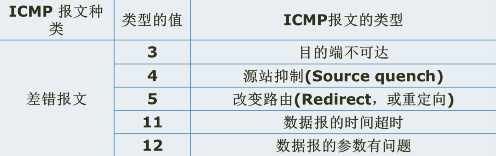

IPv4分组结构
IP分组由两个部分组成：分组头和数据。
其中分组头有固定长度部分和可选部分。
与TCP报文类似，IP分组头的基本单位也为4字节，即分组头的每行宽度为4字节，如下图所示前5行是每个分组头必须有的字段，第6行是选项字段，因此IP分组头的基本长度为5*4=20字节，如果加上最长为40字节的选项，则IP分组头的最大长度为60字节。
可见IP分组头的长度为20-60字节。值得一提的是，TCP报头长度也为20-60字节。

IPv4分组头格式
1、版本字段
2、协议字段
•指出此IP分组携带的数据使用何种协议
•以便目的主机的 IP 层将数据部分上交给哪个处理过程

IPV4协议
地址解析协议ARP
ARP


假设在以太网上运行的IP协议，把需要发送的数据封装后，要交给数据链路层发送。
以太网上使用6字节的MAC地址，每一个网卡上使用的MAC地址是由网卡的生产厂家设置的，和该接口上的IP地址没有对应的关系。
IP层协议只知道要发送的下一站的主机和路由器的IP地址，那么链路层如何决定下一站主机的MAC地址呢?
在以太网等局域网上，使用ARP协议，来实现IP地址到MAC地址的动态转换。广播询问应答
基础概念
图解ARP协议（一） - 知乎


一、ARP概述
如果要在TCP/IP协议栈中选择一个"最不安全的协议"，那么我会毫不犹豫把票投给ARP协议。我们经常听到的这些术语，包括"网络扫描"、"内网渗透"、"中间人拦截"、"局域网流控"、"流量欺骗"，基本都跟ARP脱不了干系。大量的安全工具，例如大名鼎鼎的Cain、功能完备的Ettercap、操作傻瓜式的P2P终结者，底层都要基于ARP实现。
听上去这么"逆天"的协议，其实技术原理又简单的难以置信，例如ARP整个完整交互过程仅需要两个包，一问一答即可搞定！但是ARP协议也有它令初学者迷惑的地方，例如由它本身延伸出来的"代理ARP"、"免费ARP"、"翻转ARP"、"逆向ARP"，而这些不同种类的ARP，又应用于不同的场景。好吧，在深入到技术原理之前，作为初学者，我们先记住下面三句话：
①ARP（Address Resolution Protocol）即地址解析协议， 用于实现从 IP 地址到 MAC 地址的映射，即询问目标IP对应的MAC地址。
②在网络通信中，主机和主机通信的数据包需要依据OSI模型从上到下进行数据封装，当数据封装完整后，再向外发出。所以在局域网的通信中，不仅需要源目IP地址的封装，也需要源目MAC的封装。
③一般情况下，上层应用程序更多关心IP地址而不关心MAC地址，所以需要通过ARP协议来获知目的主机的MAC地址，完成数据封装。
接下来，我们通过图解的方式来深入了解ARP协议是如何工作的。
二、ARP原理之请求应答
同一个局域网里面，当PC1需要跟PC2进行通信时，此时PC1是如何处理的？
根据OSI数据封装顺序，发送方会自顶向下（从应用层到物理层）封装数据，然后发送出去，这里以PC1 ping PC2的过程举例==>
PC1封装数据并且对外发送数据时，上图中出现了"failed"，即数据封装失败了，为什么？
我们给PC1指令-"ping ip2"，这就告知了目的IP，此时PC1便有了通信需要的源目IP地址，但是PC1仍然没有通信需要的目的MAC地址。这就好比我们要寄一个快递，如果在快递单上仅仅写了收件人的姓名（IP），却没有写收件人的地址（MAC），那么这个快递就没法寄出，因为信息不完整。
那么，现在PC1已经有了PC2的IP地址信息，如何获取到PC2的MAC地址呢？此时，ARP协议就派上用场了。我们接着上面这张图，继续==>
通过第三和第四步骤，我们看到PC1和PC2进行了一次ARP请求和回复过程，通过这个交互工程，PC1便具备了PC2的MAC地址信息。
接下来PC1会怎么做呢？在真正进行通信之前，PC1还会将PC2的MAC信息放入本地的【ARP缓存表】，表里面放置了IP和MAC地址的映射信息，例如 IP2<->MAC2。接下来，PC1再次进行数据封装，正式进入PING通信，如下==>
小结： 经过上面6个步骤的处理，PC1终于把数据包发送出去了，之后便可以进行正常的通信了。看到了吧，ARP的功能和实现过程是如此的简单：它在发送方需要目标MAC地址的时及时出手，通过"一问一答"的方式获取到特定IP对应的MAC地址，然后存储到本地【ARP缓存表】，后续需要的话，就到这里查找。
既然是"缓存"表，意味着它有时效性，并且如果电脑或者通信设备重启的话，这张表就会清空；也就是说，如果下次需要通信，又需要进行ARP请求。在我们的windows/macos系统下，可以通过命令行"arp -a"查看具体信息=>
三、ARP原理之广播请求单播回应
上面的图解过程看上去简单又纯粹，好像我们就已经把这个协议的精髓全部get到，但其实，我们只是刚揭开了它的面纱，接下来我们才真正进入正题。例如，上面的图解过程中，整个局域网（LAN）只有PC1和PC2两个主机，所以这个一问一答过程非常的顺畅。
而实际网络中，这个LAN可能有几十上百的主机，那么请问，PC1如何将这个【ARP请求包】顺利的交给PC2，而PC2又如何顺利的把【ARP回应包】返回给PC1? 我们看下面的图：
为了营造出"几十上百"的效果，这里多添加了2个主机进来 ⁄(⁄ ⁄•⁄ω⁄•⁄ ⁄)⁄，并且增加了有线和无线的环境。那么，在多主机环境下，PC1现在发出的ARP请求包，怎么交到PC2手里？
这时，ARP协议就需要采用以太网的"广播"功能：将请求包以广播的形式发送，交换机或WiFi设备（无线路由器）收到广播包时，会将此数据发给同一局域网的其他所有主机。
那么，什么是广播？对于初学者而言，我们只需要知道，大部分的广播包，它们有一个共同特征：二层封装时目的MAC是全f（ffff.ffff.ffff）或三层封装时目的IP是全1（255.255.255.255）。可以这样更方便的记住：目的地址最大的，就是广播。
注明：广播根据所在层次可分为二层广播和三层广播，根据发生范围可分为本地广播和定向广播，小伙伴们有兴趣可以自己再去拓展下。
接下来我们来看下这个ARP广播请求包接下来是如何工作的？
根据上图我们看到，PC1发送的请求广播包同时被其他主机收到，然后PC3和PC4收到之后（发现不是问自己）则丢弃。而PC2收到之后，根据请求包里面的信息（有自己的IP地址），判断是给自己的，所以不会做丢弃动作，而是返回ARP回应包。
ARP请求是通过广播方式来实现的，那么，PC2返回ARP回应包，是否也需要通过广播来实现呢？答案是否定的。大部分网络协议在设计的时候，都需要保持极度克制，不需要的交互就砍掉，能合并的信息就合并，能不用广播就用单播，以此让带宽变得更多让网络变得更快。
那么，ARP回应包是如何处理的？这里需要特别关注ARP请求包的内容，在上面的图解里面，ARP请求包的完整信息是：我的IP地址是IP1，MAC地址是MAC1，请问谁是PC2，你的IP2对应的MAC地址是多少？
简单来说，ARP请求首先有"自我介绍"，然后才是询问。这样的话，PC2在收到请求之后，就可以将PC1的IP和MAC映射信息存储在本地的【ARP缓存表】，既然知道PC1在哪里，就可以返回ARP单播回应包。
这张图我们需要得到两个信息：①被询问者PC2先生成了ARP映射信息，然后才是询问者PC1；②PC3和PC4等其他主机，无法收到这个ARP回应包，因为是单播形式。
四、ARP数据包解读
为了让大家更好的理解ARP协议以及广播和单播的概念，我们来看一下用Wireshark抓取到的真实网络中的ARP过程，通过数据包的方式来呈现，地址信息如下，部分MAC信息隐去。（建议初学者用GNS3配合Wireshark来抓取协议包进行分析，相比真实网络更加干净，方便分析）
主机1 <---> 主机2
主机1： IP1 10.1.20.64 MAC1：00:08:ca:xx:xx:xx
主机2： IP2 10.1.20.109 MAC2：44:6d:57:xx:xx:xx
【ARP请求包】
【ARP回应包】
【ARP协议字段解读】
Hardware type ：硬件类型，标识链路层协议
Protocol type： 协议类型，标识网络层协议
Hardware size ：硬件地址大小，标识MAC地址长度，这里是6个字节（48bti）
Protocol size： 协议地址大小，标识IP地址长度，这里是4个字节（32bit）
Opcode： 操作代码，标识ARP数据包类型，1表示请求，2表示回应
Sender MAC address ：发送者MAC
Sender IP address ：发送者IP
Target MAC address ：目标MAC，此处全0表示在请求
Target IP address： 目标IP
五、ARP到底是链路层还是网络层？
这个问题的难度堪比另外一个世界级难题：世界上最好的编程语言是什么？
其实早在20世纪时，W.Richard Stevens在《TCP/IP详解卷一》里面就提到了这个难题。这里给出我个人的协议分层思路，给大家作为参考=>
协议到底所属哪一层，可以从应用/功能来考虑，也可以从层次/包封装来考虑。
以ARP协议为例，它的功能最终是获取到MAC信息，服务于链路层，从这点考虑，ARP是链路层协议；但是从层次来看，ARP基于Ethernet协议，IP协议基于Ethernet协议，它们在Ethernet协议里面有独立的Type类型，前者是0x0806，后者是0x0800，既然ARP和IP协议"平起平坐"，那么IP是网络层，ARP难道就不是网络层？
小结： 基于功能来考虑，ARP是链路层协议；基于分层/包封装来考虑，ARP是网络层协议。（此方法对于ICMP协议同样管用）
\-\-\-\-\-\-\-\-\-\-\-\-\-\-\-\-\-\-\-\-\-\-\-\-\-\-\-\-\-\-\-
新浪微博：@拼客学院陈鑫杰
微信公众号：拼客院长陈鑫杰
拼客学院：www.pinginglab.net
永不上的进阶文章
图解ARP协议（二）ARP攻击篇 - 知乎


一、ARP攻击概述
在上篇文章里，我给大家普及了ARP协议的基本原理，包括ARP请求应答、数据包结构以及协议分层标准，今天我们继续讨论大家最感兴趣的话题：ARP攻击原理是什么？通过ARP攻击可以做什么，账号是否可以被窃取？有哪些常见的ARP渗透（攻击）工具可以用来练手？ARP扫描和攻击有什么区别，底层数据包特征是怎样的？
接下来，我们通过图解的方式来深入了解ARP攻击是如何实现的。
二、ARP攻击原理
但凡局域网存在ARP攻击，都说明网络存在"中间人"，我们可以用下图来解释。
在这个局域网里面，PC1、PC2、PC3三台主机共同连接到交换机SW1上面，对应3个接口port1/2/3。假设PC3这台主机安装了ARP攻击软件或遭受ARP病毒，成为这个网络的攻击者（hacker），接下来，PC3是如何攻击的？先不急，先来回顾下PC1和PC2是如何通信的。
①PC1需要跟PC2通信，通过ARP请求包询问PC2的MAC地址，由于采用广播形式，所以交换机将ARP请求包从接口P1广播到P2和PC3。（注：交换机收到广播/组播/未知帧都会其他接口泛洪）
②PC2根据询问信息，返回ARP单播回应包；此时PC3作为攻击者，没有返回ARP包，但是处于"监听"状态，为后续攻击做准备。
③PC1和PC2根据ARP问答，将各自的ARP映射信息（IP-MAC）存储在本地ARP缓存表。
④交换机根据其学习机制，记录MAC地址对应的接口信息，存储在CAM缓存表（也称为MAC地址表）。交换机收到数据包时，会解封装数据包，根据目标MAC字段进行转发。
关于上面的图解，我们要记住这些关键知识（敲黑板！）：
①主机通信需要查找ARP表，而交换机通信需要查找CAM表（路由器则查找Route表）。
注：ARP表：ip<->mac CAM表：mac<->port （Route表：route<->port）
②交换机基于源MAC地址学习，基于目的MAC地址转发。
③同一局域网内，攻击者可以根据主机的ARP广播请求监听其IP和MAC信息。
注：这里是"被动监听"，跟后面要谈到的"主动扫描"，原理上有区分，这里先埋个坑）
接下来是重点，我们来看看PC3（Hacker）是如何发起ARP攻击的=>
正常情况下，若收到的ARP请求不是给自己的，则直接丢弃；而这里PC3（Hacker）在监听之后，发起了ARP回应包：我就是PC2（IP2-MAC3）。
从拓扑可以出现，PC3明明是IP3对应MAC3，很显然这就是一个ARP欺骗行为。于此同时，PC2正常的ARP回应包也交到了PC1手中，我们来看PC1接下来如何处理的：
PC1收到两个ARP回应包，内容分别如下：
③我是PC2，我的IP地址是IP2，我的MAC地址是MAC2；
③我是PC2，我的IP地址是IP2，我的MAC地址是MAC3；
PC1一脸懵：咋回事？还有这操作？不管了，我选最新的！（后到优先）
这里给大家顺便普及下网络协议里各种表在处理缓存信息的方式：
要么"先到先得"，要么"后到优先"。上面提到的ARP和CAM表，就是遵循"后到优先"原则，而后面章节我们会讲到的DHCP表，则遵循"先到先得"原则。
那么问题来了，上面两个ARP回应包到底哪个先到哪个后到呢？
作为初学者，可能还在纠结前后这种naive的问题；而作为hacker，只要持续不停发出ARP欺骗包，就一定能够覆盖掉正常的ARP回应包。稳健的ARP嗅探/渗透工具，能在短时间内高并发做网络扫描（例如1秒钟成千上百的数据包），能够持续对外发送欺骗包。
无论如何，当PC1和PC2这种"小白"用户遇到PC3（hacker）时，最终的结果一定是这样的：
小白 vs 黑客，很明显的较量，PC1最终记录的是虚假的ARP映射：IP2<->MAC3，得到错误信息的PC1，接下来会发生什么情况呢？（我们以PC1 ping PC2为例）
根据数据封装规则，当PC1要跟PC2进行通信时，无论是发生PING包还是发送其他数据，首先要查找ARP表，然后在网络层打上源目IP，在链路层打上源目MAC，然后将数据包发送给交换机。交换机收到之后对数据进行解封装，并且查看CAM表（基于目的MAC转发），由于目标MAC3对应Port3，所以交换机自然而然将其转发给PC3。
就这样，PC1本来要发给PC2的数据包，落到了PC3（Hacker）手里，这就完成了一次完整的ARP攻击。反过来，如果PC2要将数据包发送给PC1，PC3仍然可以以同样的ARP欺骗实现攻击，这就有了下面这张图（PC3既欺骗了PC1，也欺骗了PC2）。
此时，PC1和PC2的通信数据流被PC3拦截，形成了典型的"中间人攻击"。那么，一旦被攻击并拦截，攻击者能做什么，普通用户又会遭受什么损失？这里给大家举几个常见的例子=>
①攻击者既然操控了数据流，那么直接断开通信是轻而易举的，即**"断网攻击"**，例如，PC1发给PC2的数据在PC3这里可以直接丢弃，而如果这里的PC2是一台出口路由器（无线路由器），那就意味着PC1直接无法连上互联网。
②"断网攻击"显然容易被发现，而且比较"残忍"，所以就有了更加常见的应用-"限速"。例如，在宿舍上网突然很慢，在网吧上网突然打不开网页，如果这个网络没有安全防御，那么很有可能有"内鬼"。
③其实无论是"断网攻击"还是"限速"，整体还是比较"善良"，因为这里流量里面的核心数据还没有被"提取"出来。如果攻击者是一名真正的黑客，他的目的一定不会这么无聊，因为内网流量对于黑客是没有太大价值的，而只有**"用户隐私"**，例如常见网站的登录账号密码，这些才是最有价值的。
问：遭受ARP攻击之后，哪些账号可能被窃取？
答：任何基于明文传输的应用，都可以被窃取。 例如，如果一个网站不是HTTPS协议，而是基于HTTP明文传输，那么当你登录这个网站时，你的密码就会被窃取。除了http（web应用），常见的还有telnet、ftp、pop3/smtp/imap（邮箱）等应用，都很容易泄露密码。
三、常见ARP渗透工具与底层原理分析
基于ARP欺骗原理设计出来的渗透/攻击工具非常多，而最终能实现什么功能则各有差异，简单举几个例子：
①无毒无害型的仅具备ARP扫描功能，用来发现内网主机；例如Metasploit里面的arping/arpscan相关模块；
②ARP扫描+流量控制（限速或限制能上哪些网站和应用）；例如Windows下的P2P终结者；
③ARP扫描+账号窃取（网站、邮箱、各种）；最强的莫过于Windows下的Cain，当然还有跨平台的Ettercap（需配合其他工具）；
当然，如果攻击者足够强悍，也可以基于协议底层原理，编写自己的ARP工具。这里我通过wirehshark给大家还原真实网络中常见的ARP扫描和欺骗攻击（具体的软件使用这里暂时不出现，大家重点关注底层实现）。
在这张图里面，Hacker（就是我...）接入了一个WiFi网络，这个10.1.20.0/24便是所在的网段。刚进来一个陌生网络，Hacker只知道自己的IP信息，例如IP地址是10.1.20.253，网关地址是10.1.20.254，而这个局域网的其他设备是什么？有多少台？地址分布是多少？Hacker都不知道，接下来怎么办呢？是不是要直接发动ARP攻击了？
不用这么着急，咋们至少要先了解下这个网络，进行基本的扫描和踩点。这个时候通过ARP工具对这个WiFi网络进行扫描，具体的数据包截图如下：
上面的ARP扫描过程，大概的情况是这样的=>
其实，这就是典型的"盲扫"或者"暴力扫描"：反正我不知道网络到底有多少主机，那我就尝试一下把整个网段全部问一遍得了。好比老师上课点名，把每个学生的桌位号念一遍，谁举手就到勤，没举手就算逃课。
那么，这个实际网络里面，到底谁"举手"了呢？我们来看Wireshark抓包情况。
在ARP应答信息里面，除了IP地址和MAC信息，我们还能看到相关的设备厂商信息，例如cisco、meizu、apple、xiaomi等，这其实就是依靠MAC地址前面24位的**OUI（机构唯一标识符）**来识别的。
Wireshark或扫描器能够帮我们将OUI转为对应的厂商（还有一些扫描器基于Netbios协议，还能找到电脑的主机名），所以，扫描之后可以得到下面这张图片=>
通过扫描，我们已经知道了整个网络的主机信息，例如20.254对应cisco，应该是路由器，20.248对应apple，是苹果手机，20.249对应xiaomi，是小米手机，以此类推.....
接下来，如何进行ARP欺骗攻击呢？这里将最重点的数据包截取出来=>
根据之前的信息，我们知道00:08:ca:86:f8:0f其实就是hacker的mac地址，并且对应的真正的IP地址应该是10.1.20.253。而这里很明显是hacker在欺骗局域网其他主机，它对外声称：自己就是"所有人"。尤其是上面标红的主机，我们已经知道是小米、思科、苹果等设备，但是hacker都声明是自己！这样做的意义在于覆盖掉其他主机的ARP缓存表信息，并生成错误的ARP映射，最终将通信流量交给hacker。
当然，还有另外一种ARP欺骗的做法：hacker告诉所有人，自己就是网关。因为其他主机访问互联网必经之路便是网关（出口路由器/无线路由器），通过这种方式，同样可以截取到用户数据流，这里给出另外一个网络的实现过程=>
Hacker欺骗主机Honhai，告诉它：我就是网关（10.1.1.254）
Hacker欺骗主机Apple，告诉它：我就是网关（10.1.1.254）
依此类推，Hacker会告诉局域网所有主机：自己就是网关，并且后续可以把数据都丢给我，我来转发到互联网。
四、ARP攻击总结
①ARP缓存表基于"后到优先"原则，IP与MAC的映射信息能被覆盖；
②ARP攻击基于伪造的ARP回应包，黑客通过构造"错位"的IP和MAC映射，覆盖主机的ARP表（也被称为"ARP毒化"），最终截取用户的数据流；
③一旦遭受ARP攻击，账号密码都可能被窃取（如果通信协议不是加密的）；
④通过Wireshark数据包分析，我们掌握了真实网络中ARP底层攻击原理及数据包组成。
预告：ARP防御篇
如何防御ARP攻击？
有哪些ARP防御软件？
如果被ARP攻击了，如何揪出"内鬼"，应该如何"还手"？
企业网/家庭网的防御方法有什么区别？
【相关推荐】
新浪微博：@拼客学院陈鑫杰
微信公众号：拼客院长陈鑫杰
图解ARP协议（三）ARP防御篇-如何揪出"内鬼"并"优雅的还手"？ - 知乎


一、ARP防御概述
通过之前的文章，我们已经了解了ARP攻击的危害，黑客采用ARP软件进行扫描并发送欺骗应答，同处一个局域网的普通用户就可能遭受断网攻击、流量被限、账号被窃的危险。由于攻击门槛非常低，普通人只要拿到攻击软件就可以扰乱网络秩序，导致现在的公共网络、家庭网络、校园网、企业内网等变得脆弱无比。
所以，如何进行有效的ARP防御？作为普通用户怎么防御？作为网络/安全管理员又怎么防御？有哪些ARP防御软件？如果被ARP攻击了，如何揪出"内鬼"并"优雅的还手"？
接下来，我们通过图解的方式来深入了解ARP防御原理与解决方案。
二、ARP防御原理与解决方案
在讲解ARP防御之前，我们先回顾下ARP攻击最经典的一幕=>
当PC1询问PC2的MAC地址时，攻击者PC3返回ARP欺骗回应包：我的IP地址是IP2，MAC地址是MAC3。一旦PC1记录了错误的ARP映射，则发给与PC2的数据，都会落到PC3手里。
也就是说，ARP攻击的罪魁祸首便是这种"欺骗包"，若针对欺骗包的处理是不相信或不接收的话，则不会出现问题。处理这种欺骗行为我们没法提前在黑客端做手脚，因为"敌在暗处我在明处"。这样的话，我们就剩下两个解决方法：
①保证电脑不接收欺骗包
②保证电脑收到欺骗包之后不相信
目前网络安全行业现有的ARP防御方案，基本都是上面两个方法的具体实现。我们来看看这张防御图：
①当黑客发起ARP欺骗包时，会途径局域网里面的交换机或无线路由器等网络设备；
②如果网络设备能够识别这种欺骗包，并且提前丢弃掉，则电脑/手机端就不会被欺骗；
③如果网络设备没有拦截这种欺骗包，则电脑/手机端需要做安全防御，然后再丢弃。
简单来说，ARP防御可以在网络设备上实现，也可以在用户端实现，更可以在网络设备和用户端同时实现。接下来，我们先来了解下网络设备（例如这里的交换机）的防御技术。
上面这张图，展现的是交换机的ARP防御能力，当PC2发送ARP回应包时，交换机将其转发给PC1，而当PC3发送ARP回应包（欺骗）时，交换机直接丢弃。
但是，**人家PC3上脸上又没有写着"hacker"，凭什么交换机要丢弃它的ARP回应包？**凭什么判断它的包就是"欺骗"的呢？
接下来，我就要给大家介绍下局域网安全里比较常用的防御技术，这种防御技术被称为DAI（Dynamic ARP Inspection）- 动态ARP检测，原理可以用两句话简单概括：
①交换机记录每个接口对应的IP地址和MAC，即port<->mac<->ip，生成DAI检测表；
②交换机检测每个接口发送过来的ARP回应包，根据DAI表判断是否违规，若违规则丢弃此数据包并对接口进行惩罚。
我们知道，PC3是在交换机的Port3、MAC地址是MAC3，IP地址是IP3，所以本地DAI表项内容是**<port3-mac3-ip3>。当交换机从接口Port3收到ARP回应包，内容却是IP2和MAC3映射，即<port3-mac3-ip2>。**
经判断，这个包就是虚假的欺骗包，交换机马上丢弃这个包，并且可以对接口做惩罚（不同设备的惩罚方式有所不同，可以直接将接口"软关闭"，直接将攻击者断网；也可以"静默处理"，仅丢弃欺骗包，其他通信正常）
上面这个动态ARP监测技术，可以说是目前防御ARP攻击最有效的方法之一。但是，作为初学者，大家可能还会有疑问：
①一般的交换机或网络设备能部署动态ARP监测技术吗？
②连接用户的交换机，怎么能识别IP地址信息呢？
③上面这张DAI表是如何生成的？是不是像CAM表一样能自动识别？
这里要给大家说个稍微悲伤一点的事实，大部分能支持这种动态ARP监测技术的交换机或者无线路由器，都基本是企业级的产品。 即便是企业级交换机，具备局域网安全防御功能的设备，价格都要高出不少，所以很多中小型企业网或校园网，基本都愿意买"阉割版"网络接入产品，因为"能通就行"，至于安全性怎样，这是另外要考虑的问题。
所以，简单的交换机不具备动态ARP监测技术，即便市面上有带安全防御的网络产品，企业、学校、医院等大量网络，仍然在早期采购的时候，用的是比较基础版本的交换机。当然，随着网络与安全市场的激烈竞争和网络安全意识的增强，以后会越来越好。
另外，交换机能识别IP地址信息吗？
从现在的网络技术来看，分层界限越来越模糊，融合式的网络设备才是主流，现在的接入交换机基本能被Telnet/SSH/Web管理，更专业的交换机同时支持动态ARP监测（dai）、IP源防护（ipsg）、DHCP侦听（dhcp snooping）、端口安全、AAA、802.1x等局域网安全技术，已经超越了原有二层交换机的定义。
所以，交换机能读三层甚至七层的数据包已经不是什么新鲜事了，不要被"交换机就是二层设备"给束缚了，这只是纸面上的定义。
最后一个问题，DAI检测表是如何生成的？
在上面图解中，我们看到交换机查看的表已经不是原来的CAM表了，内容也不太一样，CAM表的内容主要是MAC和Port的映射，而DAI检测表则是Port、MAC、IP三个信息映射。
目前这张表支持两种方式来生成=>
第一种方式就是手工静态绑定：即用户接入网络之后，管理员根据此用户电脑的MAC和IP地址，然后在接口上绑死，缺点就是用户数太多的话，手工绑定管不过来。
第二种方式就是目前最主流的做法，即在交换机上开启DHCP侦听技术，当用户第一次通过DHCP获取到地址的时候，交换机就把用户电脑的IP、MAC、Port信息记录在DHCP侦听表，后面ARP检测直接调用这张DHCP侦听表即可。
小结：以上便是在网络设备上部署的ARP防御技术，通过动态ARP监测技术（DAI），可以很好的解决ARP欺骗问题。技术虽好，但局域网内的交换机、无线路由器是否支持DAI，这个则取决于实际网络情况，尤其是十面埋伏的公共WiFi网络、脆弱无比的家庭网络、能通就行的校园网络...... 我们都应该持怀疑态度，至少不能完全信任这些网络。
既然这样的话，**普通用户有没有"自救"的方法，能够抵挡ARP攻击呢？**答案是肯定的=>
对于普通用户，陌生网络不要随意接入，肯定是首选考虑的；当然，这里研究的是用户已经接入了网络，如何做安全防御的问题。从上图可以看到，用户（电脑或手机）最重要的便是通过安装ARP防火墙做安全防御，很多普通用户甚至“以电脑裸奔为豪，以骂安全厂商为荣”，这是对技术的严重藐视，对自己隐私的不负责任。 普通小白一定要记住一句话：你没有被黑，只是你还没有到达被黑的价值。
ARP防火墙在技术实现上，一般都有以下功能：
①绑定正确的的IP和MAC映射，收到攻击包时不被欺骗。
②能够根据网络数据包特征（参考上一篇讲解的ARP攻击数据包溯源分析），自动识别局域网存在的ARP扫描和欺骗行为，并做出攻击判断（哪个主机做了攻击，IP和MAC是多少）。
那么，有哪些常见的ARP安全产品呢？
自带ARP防御功能：腾讯电脑管家、360安全卫士……
专业的ARP防火墙：彩影ARP、金山贝壳、360ARP防火墙……
采用安全产品肯定是普通用户最省时省力的做法，而对于技术人/工程师而言，如果不屑于使用安全产品，并且希望解决ARP攻击行为，也可以通过"ARP双向绑定"的技术来实现。什么是"ARP双向绑定"呢？
从上图可以看到，PC1和PC2通信双方都静态绑定对方的IP和MAC映射，即便收到ARP欺骗包，由于静态绑定的ARP映射条目优先级高于动态学习到的，所以可以保证不被欺骗。
这种做法非常"绿色无污染"，因为不需要额外的软件安装，但是缺点也非常明显，例如普通用户不知道如何在电脑上做ARP静态绑定，另外工作量也比较大，每个主机和网关设备都需要绑定整个局域网的ARP静态映射。以下面的家庭WiFi网络为例：
像这个WiFi网络，如果通过ARP双向绑定来解决安全问题，配置量其实蛮大的，当然，这就基本能够保障内网主机间通过以及主机访问互联网的安全性了。
Windows arp静态绑定方法=>
①进入命令行cmd界面；
② \[arp -s ip地址 mac地址\]，例如：arp -s 192.168.1.1 00-11-22-a1-c6-09
注：家用无线路由器若要进行ARP绑定，则需要通过web登录并进行图形操作
小结：用户端的ARP防御方法，要么安装ARP防火墙，要么做ARP双向绑定。对于绝大部分用户来讲，虽然安装防火墙不是保证百分百安全了，但是能够解决很大一部分的隐患。
三、如果被ARP攻击了，如何揪出"内鬼"并"优雅的还手"？
相比"如何防御ARP攻击"，我相信更多人感兴趣的是"如何揪出内鬼并进行还手"，因为"揪出内鬼"的时候，我们充当着"网络警察"的角色（把小偷逮住），而"优雅的还手"又充当着"法官"的角色（惩治小偷）。
而充当网络警察或法官这种角色，我可能算是比较有经验的...... 从我刚接触网络/安全到现在，充当的次数多的数不过来：在学校外面租房的时候（别想歪）、在网吧上网的时候、在音乐餐吧吃饭的时候、在麦当劳/德克士蹭网的时候......可能普通用户觉得稀疏平常的地方，在网络世界里实则暗流涌动。
我第一次"抓内鬼当法官"应该是在2010年的时候，当时在学校旁边租了一个房子自己做技术研究。有一天晚上，网速变得特别慢，网页基本没法打开，QQ勉强还能挂着，但是租房以来网络一直还可以，虽然不算快，但是也至少满足平常上网需求啊。我心想：算了，毕竟租的房子一般，每个月网费也就30快，房东拉的宽带可能比较垃圾不稳定吧，明天再看看。
第二天早上爬起来，发现网络一点问题都没有，该开的网页，该下载的资料，都没有任何影响，恩，心情不错，不用专门跑回学校一趟下载资源之类的。但是到了晚上七八点的时候，网络又出现问题了，跟昨天晚上的情况一模一样，基本没法上网，但是网卡又显示连接着，这让我非常的郁闷。
然后我突然想起这几天，这栋楼好像新来了一个租客，这栋楼一共就四层，一层就3户租客，一共也就10来户，而一楼还是房东自己一家人住，我自己住二楼。基本上这栋楼里的租客都能记得七七八八，所以如果有陌生面孔的话，一眼就能认出来，我们暂且把这个人称为H，看上去是个上班族。
虽然当时还是个小菜鸟，但是毕竟学这块的，还是有点敏感：擦，会不会是这个人白天去上班，晚上回来宿舍，就开始限制我们的网速啊？
你不犯我，相安无事，你若范我，我必搞你。 （年轻人还是有点浮躁啊....）
行，开干吧，多想没用。然后便拿出了P2P终结者（忘了当时用什么软件了，不过八九不离十）一扫描，想探探网络究竟。
万万没想到啊，居然遇到老司机了，人家局域网权限比我还高（很多局域网流控软件都有权限的概念，若同一个局域网同时有多个使用这个流控软件，则权限高的优先控制，其他人的软件会自动退出），网络扫描进行一半，就提示"局域网有多人使用，由于你权限较低暂停退出"这样的提示，这样一来，就验证了我的判断，这个内鬼应该是H。自从他来了之后，这个网络就出了问题。这栋楼的网络拓扑结构是这样的=>
普通小白遇到这种情况，装个ARP防火墙，咬咬牙也就过去了**。但是咋们学网络和安全的，遇到这种情况，感觉就好像被人骑在头上一样**。那咋办呢？作为一个理科男，做事情还是得按步骤走，不能被脾气牵着走，虽然当时已经非常生气了，但是基本定下来这个解决流程：
第一：马上给电脑安装防火墙，先脱离H的控制（当时电脑居然是裸奔的...）；
第二：想尽办法找到H的IP和MAC地址（很多小伙伴看到这里可能会想：直接上去楼上揍他一顿不就得了，还费什么劲找地址啊。这个有必要说明下：①我个头没人家大只 ②人家要是问：你有证据吗，你取证了吗？ 所以，武力不能解决问题，但是技术能力可以。）
第三：想方设法拿到网络控制权，把他踢下去。
第一步：具体就不说了，也忘了当时装的什么安全软件了；
**第二步：怎么找到攻击者的IP和MAC地址呢？**2010年的安全软件，不像现在的ARP防火墙，能够主动告警，并且说明攻击次数和攻击源，所以还是需要自己折腾下：熟练的打开电脑之前安装好了的wireshark，监听自己电脑网卡的流量，设置流量过滤器（仅过滤arp协议），不出意外，接下来就是一堆"带有节奏的ARP扫描包"（还记不记得之前章节说过的，ARP攻击一般会涉及到持续的内网扫描和欺骗攻击）。当时收到的数据包大概这样的：
通过流量数据包分析，很快就确定了攻击者的IP和MAC地址。这里要注意：虽然抓到了攻击者的IP和MAC地址，但是！我们还是没法实锤的证明：攻击者就是H。
这个攻击者是不是真的H啊？怎么确定就是这个人干的呢？如何把虚拟世界里的地址跟真实世界的人匹配起来？
接下来我便想到了一个方法：如果我们能先拿到网络的控制权，然后把攻击者给踢下去直接断网，同时保证其他人网络连通；然后，谁要是下去跟房东沟通反馈不能上网，不就可以基本断定这个人就是攻击者？ 说白了，就是"谁叫谁小狗"......
**好，到了计划的第三步：如何拿到整个网络的控制权？**这里就没走的那么顺畅了：现在的实际情况是：我和攻击者同时开启局域网流控软件，而是我被踢下来了，因为我权限低一些。当时的第一个想法是：我换一个流控软件不就得了？这样我不跟你拼这个软件的权限。但是仔细想了想，即便换一个流控软件能用，但是顶多也就是打个平手，我控制不了你，你也控制不了我，但最终遭殃的还是其他普通小白，这个方法不能"斩草除根"啊。
怎么办呢？是不是只能跟他打个平手。在这里卡了很久但又心有不甘，然后到了大半夜了突然顿悟：擦，为什么要跟他"限来限去"呢，直接上整栋楼的出口路由器，把他踢出去不就得了？路由器（应该是TP-LINK）就在一楼楼梯口，然后其他楼层加一个hub级联上去，所以大家都在一个网络里面。
但问题是没有路由器的后台登录密码，怎么解决呢？抱着侥幸的心理，查看电脑网关地址，然后浏览器输入网关地址，弹出了登录页面，尝试admin/admin？不行，再尝试admin/123456？还是不行...... 就这样尝试了常见的十几二十个账号密码，都提示账号密码错误，看来运气不是很好。
既然这样的话，就只能拿出暴力破解软件跑几个词典看看，用hydra挂着用户名和密码词典，慢慢的看着命令行输出，但输出结果基本都是failed...... 所以，第二天晚上虽然发现了攻击者的IP和MAC地址信息，但是拿他没办法，只能先忍着。
到了第三天白天，脑子里想的都是如何登录这个路由器后台管理界面，尝试跑了几个词典都没法登录，心理又在想：房东不应该会设置太复杂的密码啊，四五十岁的阿姨，完全不懂技术啊，网络应该也是叫人搞的，即便别人设置密码也应该给阿姨设置比较简单的让她好记的，方便后面维护之类的...... 一想到这里，赶紧从柜子里掏出之前的租房合约和房东名片，然后把房东的手机号码、房东的姓名拼音等信息做成简单的密码词典，再重新跑一次，还没反应过来，就显示密码尝试成功：admin/房东手机号码。万万没想到，以为只要6位或者8位的密码，居然是一个11位的手机号码，之前尝试的词典都是8位以内的。
接下来用浏览器访问路由器后台管理界面，进入主机列表，还没发现这个昨晚攻击者的IP地址上线。等到了晚上七八点的时候，终于在路由器上发现这个IP地址，而且，wireshark同时也抓到了这个攻击者发起的扫描包。看来是攻击者一回到宿舍，打开电脑，就直接挂着攻击软件，确实是个**"惯犯"**啊。好吧，看到这个情况，我直接在出口路由器上把这个IP和MAC地址禁用，看接下来发生什么。
果然，大概过了半个钟，有人从楼上下来，直接去一楼找房东阿姨去了，具体说什么这个不清楚，但是应该是询问是不是宽带欠费之类的导致不能上网。
过了一会，阿姨带着他上来二楼..... 然后敲门询问：你们二楼能不能上网啊？大家都陆续回答：可以啊、没问题啊。与此同时，我已经确定了：眼前的这个人，H就是攻击者！他大概没料到，自己已经控制了内网，怎么可能被踢掉之类呢。
阿姨也不知道怎么办，只能说明天看看吧。看着他无辜的眼神回楼上去了，我也觉得抓到内鬼也就算了，先把他解禁看看。然后"惯犯"又上线了，看来没有吃够苦头啊，当天晚上直接让他断网。之后的几个晚上类似的情况慢慢少了，因为只要他一扫描发起攻击，我这边就断他网，然后隔10分钟或者半个钟看看他反应，就这样慢慢地把他制服了，整栋楼的网络也就逐渐恢复了平静……
四、ARP防御总结
①ARP攻击非常低门槛，但是造成的影响却很大，包括断网攻击、流量被限、账号被盗等；
②ARP防御可以在网络端（网络设备）上部署，也可以在用户端（电脑/手机）上部署；
③网络设备（例如交换机）部署ARP防御，通常需要用到DAI（动态ARP监测）技术，更加专业的局域网安全防御，还可能结合DHCP侦听、IP源防护、端口安全、AAA、802.1X等技术，这些专业的防御技术，是由网络运维和安全运维工程师来实施的。
④用户端（电脑/手机）实施ARP防御，最好的方法就是不要随意接入陌生网络，并且安装ARP防火墙。当然，技术宅的话，可以采用"ARP双向绑定"的方法，相对比较麻烦，但是也奏效。
⑤作为一名有素养的网络/安全工程师，应该不作恶。但是如果遭受攻击，应该揪出内鬼并"优雅的还手"，做一个网络警察，还普通用户一个干净的网络环境。
【相关推荐】
新浪微博：@拼客学院陈鑫杰
微信公众号：拼客院长陈鑫杰
图解ARP协议（四）代理ARP：善意的欺骗 - 知乎


一、代理ARP概述
我：当电脑要访问互联网上的服务器，目标MAC是什么？
很多小伙伴在刚学习网络协议的时候，经常这样直接回应：不就是服务器的MAC嘛!
这时我会反问：那电脑怎么拿到这个服务器的MAC地址呢？
小伙伴一般都自信的抛出下面两个点：
①根据网络通信中数据封装的原则，通信双方需要封装源目IP和MAC地址；
②如果要拿到目标MAC地址，就需要通过ARP协议进行交互。
我：好，确实没毛病，你是指的下面这个意思吧 ==>
小伙伴：对对对，是这个意思的。
我：好，你再看看下面这个图，再确认下。
小伙伴：好像不太对唉，刚才没注意看...... 互联网这么多路由器，根据之前学过的：
①路由器隔离广播域，每个接口/网段都是独立的广播域；
②ARP请求是二层广播包，广播包没法过路由器，
这样的话，ARP请求广播包根本没法穿越互联网到达目标服务器。
我：那我们平常上微博逛知乎去京东剁手基本都依据上面这张图，通过DNS协议将域名解析为IP地址，通过ARP协议将IP解析为MAC地址。现在ARP请求无法穿越过去，电脑便无法获取目标服务器的MAC地址，怎么跟它通信呢？
小伙伴：。。。。。。
上面这个疑惑，我相信每个学习网络协议的初学者经常会问到，更普遍的情况是，很多工作多年的工程师，也未必能够将下面这几个问题完全搞清楚：
①电脑访问互联网服务器的时候，ARP询问的内容，真的是问服务器的吗？
②什么是代理ARP？跟ARP有什么区别？什么场景下会用到代理ARP？
③代理ARP跟网关（默认路由）设置有什么关系？
所以，这一篇文章虽然是讲代理ARP，但其实核心内容是围绕代理ARP，解读跨网段通信过程中，ARP/代理ARP/网关（默认路由）/数据封装等相关问题。
二、代理ARP原理
当ARP请求目标跨网段时，网关设备收到此ARP请求，会用自己的MAC地址返回给请求者，这便是代理ARP（Proxy ARP）。
上面这张图中，电脑发送ARP请求服务器8.8.8.8的MAC地址，路由器（网关）收到这个请求时会进行判断，由于目标8.8.8.8不属于本网段（即跨网段），此时便返回自己的接口MAC地址给PC，后续电脑访问服务器时，目标MAC直接封装为MAC254。
代理ARP本质是一个"善意的欺骗"，是一个"错位"的映射。从图中我们看到服务器地址的正常映射是<8.8.8.8-MAC2>，而路由器返回给电脑的，却是 <8.8.8.8-MAC254>。不管是不是"欺骗"，至少最终电脑可以与外网的服务器实现通信，以PC Ping Server为例=>
实际网络中，代理ARP由网络中的网关设备来执行，包括路由器、多层交换机、无线路由器、防火墙等设备。并且，网关即便有代理ARP功能，也未必一定执行，还必须满足两个条件：①网关已经开启代理ARP功能；②网关有目标的路由信息。 我们来看下面这张图=>
上面这张图中，我们假设路由器已具备全网的路由，但连接电脑的接口没有开启（或不支持）代理ARP功能，此时便造成一个尴尬的情况：电脑反复询问到8.8.8.8的MAC地址，路由器收到之后，处理流程跟正常ARP是一致的，"问自己的回复，不是问自己的丢弃"。因此，当网络通信采用代理ARP时，可能会"受制于沿途网关设备"，造成网络通信故障。
进一步思考：既然代理ARP不是一种特别流畅的实现，会"受限于别人"，那我们没必要一定要使用它。甚至，这里我们需要搞清一个事实：实际网络中，无论是同网段还是跨网段通信（例如访问互联网），绝大情况下都是使用正常的ARP，而不是代理ARP。 生活中的上网的经验也已经告诉我们，好像从来没有遇到或听到过"XXX设备不支持代理ARP功能，导致通信故障"这样的问题。
很多小伙伴看到这里，会有大大的疑惑：
① "什么! 我们才刚学习了代理ARP的实现原理，现在居然告诉说它没怎么用？"
② 那为什么要创造代理ARP，它的真正使用场景在哪里？？
③ 上述图解中，电脑跨网段通信时ARP到底是如何工作的？？？
接下来给大家划重点：
第一，代理ARP仅仅是正常ARP的一个拓展使用，是可选项而不是必要项；
第二：代理ARP有特定的应用场景，与网关/路由的设置有直接关系：当电脑没有网关/路由功能时，并且需要跨网站通信时，则会触发代理ARP。换句话说，如果有网关/路由功能，则不需要代理ARP；
第三：正常环境下，当用户接入网络时，都会通过DHCP协议或手工配置的方式得到IP和网关信息（所以不需要代理ARP）。
三、ARP与代理ARP：不是互斥而是互补
在大家理解了代理ARP的工作原理和应用场景之后，接下来我们终于可以更加全面的分析开篇的这个经典问题：当用户访问互联网的时候，到底用ARP还是代理ARP？跟网关/路由设置有什么关系？数据封装又有什么区别？
我们通过下面两张图做个对比=>
当电脑没有网关时，PC Ping 8.8.8.8，采用代理ARP =>
当电脑有网关时，PC Ping 8.8.8.8，采用正常ARP =>
通过上面的对比，我们得到以下信息：
①电脑没有网关时，ARP直接询问目标IP对应的MAC地址（跨网段），采用代理ARP；
②电脑有网关时，ARP只需询问网关IP对应的MAC地址（同网段），采用正常ARP；
③无论是正常ARP还是代理ARP，电脑最终都拿到同一个目标MAC地址：网关MAC。
为了让上面这个总结更加的通用性，我们将原有的网络拓扑稍微复杂化 =>
当电脑没有网关时（采用代理ARP ），PC 依次Ping 8.8.8.8、8.8.4.4、114.114.114.114=>
当电脑有网关时（采用正常ARP ），PC 依次Ping 8.8.8.8、8.8.4.4、114.114.114.114=>
通过上面的拓扑，我们可以得到更加通用性的总结，归纳如下：
①当电脑没有网关（采用代理ARP）时："跨网段访问谁，就问谁的MAC"
②当电脑有网关（采用正常ARP）时："跨网段访问谁，都问网关的MAC"
③无论哪种ARP，跨网段通信时，发送方请求得到的目标MAC地址都是网关MAC。
注明：网关（Gateway）、下一跳（Next-hop）、路由器（Router）都指的是离发送方最近的三层（或多层）设备，具备三层和路由转发功能。 举例：我们通过WiFi上网时，网关就是无线路由器，它帮忙将电脑和手机的数据转发到互联网；所以，我们访问互联网时（无论访问谁），电脑和手机采用的目的MAC，都是无线路由器的MAC。有兴趣的小伙伴都可以跟着我验证下（请见下面章节）。
四、ARP与代理ARP实战指南
为了让大家更直观理解，真正**"亲眼所见"上面学到的技术原理，这里我带大家在真实网络和虚拟环境分别验证**。第一个实验，主要是针对没任何命令基础的小伙伴，大家可以在家就可以实验；第二个实验，主要针对有一定网络和安全基础的小伙伴，通过构造网络虚拟实验环境来验证。
（一）真实网络下ARP与代理ARP实验
这个网络中，我的电脑地址是192.168.199.177，连接到极路由（无线路由器），通过极路由器访问互联网。这个WiFi网络的主机列表情况如下，这里的PC就是我的Macbook。
接下来再看看极路由MAC地址=>
查看我的电脑(Macox系统）IP地址和网关信息，通过命令**"ifconfig"查看ip地址=>（Windows系统则通过"ipconfig /all"**查看IP地址和网关信息）
通过命令**"netstat -rn"**查看我的电脑网关设置=>
接下来，我的电脑连续PING 8.8.8.8和114.114.114.114或其他外网地址=>
重点来了，在我的电脑连续访问这么多外网地址之后，我们来看看ARP表项是怎样的，是否有8.8.8.8、114.114.114.114、http://www.pinginglab.net（120.24.59.68）对应的MAC呢？
通过命令**"arp -a"**查看电脑的ARP缓存信息=>
从最终的ARP内容来看，我的电脑只记录着本机和网关的MAC地址，MAC地址"d4:ee-07:54:c1:9e"就是上面给大家截图的极路由MAC。
通过这个真实网络的实验，我们可以验证了以下内容：
①真实网络中一般都是正常ARP，而不是代理ARP；
②当电脑有网关（采用正常ARP）时，无论跨网段访问谁，都直接问网关的MAC；
③当第一次获取网关MAC之后，后续的通信都不再需要重新进行ARP请求。（这个是比较容易忽略的，而代理ARP每次访问新的外网地址，都需要再次请求）
（二）虚拟环境下ARP与代理ARP实验
网络拓扑采用GNS3搭建，采用C3640操作系统镜像=>
① 首先为各个设备打开接口并配置IP地址：
PC(config)#int f0/0
PC(config-if)#no shutdown
PC(config-if)#ip address 192.168.1.1 255.255.255.0
Router(config)#int f0/0
Router(config-if)#no shutdown
Router(config-if)#ip address 192.168.1.254 255.255.255.0
Router(config-if)#int f1/0
Router(config-if)#no shutdown
Router(config-if)#ip address 8.8.8.1 255.255.255.0
Server(config)#int f0/0
Server(config-if)#no shutdown
Server(config-if)#ip address 8.8.8.8 255.255.255.0
②为各个设备设置路由信息：
a.关闭PC上路由功能，模拟主机并查看路由表（此时的电脑没有设置网关）
PC(config)#no ip routing
PC#show ip route
Default gateway is not set
Host Gateway Last Use Total Uses Interface
b.设置并查看Router和Server路由表，保证联通，模拟互联网（这里Router已有全网的直连路由，Server需要设置返回内网的路由；实际环境应该通过NAT返回，这里不再深入）
Router#show ip route
Codes: C - connected, S - static, R - RIP, M - mobile, B - BGP
D - EIGRP, EX - EIGRP external, O - OSPF, IA - OSPF inter area
N1 - OSPF NSSA external type 1, N2 - OSPF NSSA external type 2
E1 - OSPF external type 1, E2 - OSPF external type 2
i - IS-IS, su - IS-IS summary, L1 - IS-IS level-1, L2 - IS-IS level-2
ia - IS-IS inter area, * - candidate default, U - per-user static route
o - ODR, P - periodic downloaded static route
Gateway of last resort is not set
8.0.0.0/24 is subnetted, 1 subnets
C 8.8.8.0 is directly connected, FastEthernet1/0
C 192.168.1.0/24 is directly connected, FastEthernet0/0
Server(config)#ip route 192.168.1.0 255.255.255.0 8.8.8.1
Server#show ip route
Codes: C - connected, S - static, R - RIP, M - mobile, B - BGP
D - EIGRP, EX - EIGRP external, O - OSPF, IA - OSPF inter area
N1 - OSPF NSSA external type 1, N2 - OSPF NSSA external type 2
E1 - OSPF external type 1, E2 - OSPF external type 2
i - IS-IS, su - IS-IS summary, L1 - IS-IS level-1, L2 - IS-IS level-2
ia - IS-IS inter area, * - candidate default, U - per-user static route
o - ODR, P - periodic downloaded static route
Gateway of last resort is not set
8.0.0.0/24 is subnetted, 1 subnets
C 8.8.8.0 is directly connected, FastEthernet0/0
S 192.168.1.0/24 [1/0] via 8.8.8.1
③查看PC/Router/Server的接口MAC地址：
PC#show int f0/0
FastEthernet0/0 is up, line protocol is up
Hardware is AmdFE, address is cc05.1f56.0000 (bia cc05.1f56.0000)
Internet address is 192.168.1.1/24
Router#show int f0/0
FastEthernet0/0 is up, line protocol is up
Hardware is AmdFE, address is cc07.1f56.0000 (bia cc07.1f56.0000)
Internet address is 192.168.1.254/24
Router#show int f1/0
FastEthernet1/0 is up, line protocol is up
Hardware is AmdFE, address is cc07.1f56.0010 (bia cc07.1f56.0010)
Internet address is 8.8.8.1/24
Server#show int f0/0
FastEthernet0/0 is up, line protocol is up
Hardware is AmdFE, address is cc06.1f56.0000 (bia cc06.1f56.0000)
Internet address is 8.8.8.8/24
④通过Wireshark抓取PC和Router链路的数据包，并让PC ping Server（8.8.8.8），查看ARP问答信息：
PC#ping 8.8.8.8
Type escape sequence to abort.
Sending 5, 100-byte ICMP Echos to 8.8.8.8, timeout is 2 seconds:
.!!!! （一个ping来回为一个 ! 标识，而第一个点 . 代表此时正在arp）
Success rate is 80 percent (4/5), round-trip min/avg/max = 44/47/48 ms
从数据包可以看到，由于PC没有设置默认网关，所以直接采用代理ARP方式询问： 即直接询问跨网段目的8.8.8.8的IP地址。而由于路由器Router默认开启了代理ARP功能，所以直接用自己的MAC地址回应了。这里的cc:07:1f:56:00:00即路由器的MAC地址。这里顺便查看下PC的arp表：
PC#show arp
Protocol Address Age (min) Hardware Addr Type Interface
Internet 8.8.8.8 9 cc07.1f56.0000 ARPA FastEthernet0/0
Internet 192.168.1.1 - cc05.1f56.0000 ARPA FastEthernet0/0
因此，这里便验证了：当电脑没有设置网关信息，则采用代理ARP。
我们接着验证另外一个点：当采用代理ARP时，会"受限于沿途网关设备"，例如网关设备（路由器）可能不支持代理ARP或关闭代理ARP功能，此时电脑就无法与外网IP实现通信。
怎么验证呢？这里我们需要关闭路由器接口的代理ARP功能，并且清空电脑PC的arp表=>
Router(config)#int f0/0
Router(config-if)#no ip proxy-arp
PC#clear arp
PC#ping 8.8.8.8
Type escape sequence to abort.
Sending 5, 100-byte ICMP Echos to 8.8.8.8, timeout is 2 seconds:
.....
Success rate is 0 percent (0/5)
查看底层数据包交互过程=>
当路由器关闭代理ARP时，此时电脑"苦苦哀求"外网8.8.8.8的MAC地址，而路由器直接丢弃不再返回，由于电脑没有目标IP对应的MAC信息，所以通信失败，即 ...... 我们来看下此时PC的arp表是怎样的=>
PC#show arp
Protocol Address Age (min) Hardware Addr Type Interface
Internet 8.8.8.8 0 Incomplete ARPA
Internet 192.168.1.1 - cc05.1f56.0000 ARPA FastEthernet0/0
⑤为PC设置默认网关，重新ping 8.8.8.8，看看能不能通=>
PC(config)#ip default-gateway 192.168.1.254
PC#ping 8.8.8.8
Type escape sequence to abort.
Sending 5, 100-byte ICMP Echos to 8.8.8.8, timeout is 2 seconds:
!!!!!
Success rate is 100 percent (5/5), round-trip min/avg/max = 44/244/1040 ms
可以看到，当电脑具备网关信息之后，此时直接采用ARP询问网关的MAC，即去往8.8.8.8的时候直接询问192.168.1.254的MAC，这个时候不管Router有没有开启代理ARP，也会正常回应PC的ARP询问，我们来看看底层数据包截图=>
五、代理ARP总结
① 本章节我们深入学习了代理ARP的原理和实践，在文章的开头，我们通过一个引子，帮大家矫正一个误区：跨网段通信时，就一定要用到代理ARP；
②代理ARP是一个"善意的欺骗"，当电脑要跨网段访问外网设备时，网关设备用自己的MAC返回；
③代理ARP和ARP的具体实现，跟电脑是否有设置网关有直接的关系；有网关通过ARP，没网关通过代理ARP；代理ARP可以看成是ARP的补充；
④代理ARP会"受限于沿途网络设备"，真实网络里面一般都直接用ARP获取MAC地址。
预告：
什么是免费/无故ARP？
免费ARP的功能是什么？在什么时候出现？
免费ARP的数据包结构是如何的？
【相关推荐】
新浪微博：@拼客学院陈鑫杰
微信公众号：拼客院长陈鑫杰
图解ARP协议（五）免费ARP：地址冲突了肿么办？ - 知乎


一、免费ARP概述
网络世界纷繁复杂，除了各种黑客攻击行为对网络能造成实际破坏之外，还有一类安全问题或泛安全问题，看上去问题不大，但其实仍然可以造成极大的杀伤力。今天跟大家探讨的，也是技术原理比较简单，但实际防范比较头疼的一个问题：地址冲突。
这个局域网中，大家所在IP网段是192.168.1.0/24，PC1的地址是192.168.1.1，而PC2和PC3的地址发生冲突，都是192.168.1.2。那么，如果PC1需要将数据包发送给192.168.1.2，数据包最终到了PC2还是PC3手里？还是负载均衡？不管结果如何，这里的地址冲突肯定会对正常通信造成麻烦。
上面这个电脑/手机之间的地址冲突，大家可能觉得没什么太大的问题，那么接下来再看下面这个图片=>
这里的Server1和Server2处在 [服务集群]中，提供着企业的某种服务，例如Web网站、邮箱系统、FTP文件服务器等，此时服务器的地址发生了冲突，都是10.1.1.1。这种地址冲突则会影响大规模的用户无法访问这个服务器，若服务器承载的是核心业务，对于企业则会造成极大的影响。
所以，地址冲突问题可大可小，可能网络运维人员部署上的疏忽，也可能是普通电脑小白无意导致的，更有可能是主动的黑客行为，例如攻击者制造地址冲突场景，扰乱正常业务，导致业务服务中断。
因此，如何在IP地址冲突的时候及时检测，并且做出解决方案呢？
二、免费ARP原理
Gratuitous ARP，被翻译为『免费ARP』也被称为『无故ARP』，用于检测局域网内的IP地址冲突，在一定程度上能够给用户和网络运维人员提供帮助。相比『免费』这个翻译，『无故』这个词其实会更加好理解："在没有人问自己的情况下，无缘无故自问自答"。
这项技术不需要电脑和服务器安装什么安全软件或产品例如防火墙之类的，也不需要交换机和路由器购买什么license，只要设备具备联网功能（有网卡）就内置了这项功能，由于免费ARP本质是ARP协议的实现，所以只要有TCP/IP协议栈的网卡，就能支持。相比其他安全防御技术，免费ARP是一项轻量级的"用户无感知"的技术。
接下来，我们来回顾下之前的图片=>
当用户发送数据包给192.168.1.2的时候，交换机会将数据包转发给谁呢？
①根据我们之前学过的ARP原理，交换机会拆开这个数据包，并且根据目的MAC进行转发；
②那么PC1在数据封装的时候，目的MAC是封装PC2还是PC3的MAC？
③目标MAC则取决于电脑本地的ARP缓存表，所以PC1最终把数据包给PC2还是PC3，则取决于收到的ARP回应，并且根据"后到优先"原则作出选择。
所以，若PC2提前回应ARP，则PC1一直发给PC3；若PC3提前回应ARP，则PC1一直发送给PC2。还有一种情况，PC2和PC3交替回应ARP，PC1有可能将部分数据给PC2，部分数据给PC3（而PC1则处于懵逼状态，因为关于192.168.1.2的MAC映射一直在变动）。这个更多是理论推导，实际情况不同设备测试出来的效果有些差异，后面章节我会带大家做真实和虚拟网络的实验。
我们来看看免费ARP是如何工作的并介入这场冲突的？
当电脑检测到自己的IP地址跟其他电脑冲突时，它们会相互发送免费ARP（"互怼"），用来提醒对方：你的IP地址跟我的冲突啦！ 这里要注意一点：免费ARP是以ARP Request或Reply广播形式发送，将IP和MAC地址信息绑定，并宣告到整个局域网。如果在宣告的过程中，其他电脑监听到，并且地址跟自己一样，也会直接参与这个"互怼"过程。
上面PC2和PC3一直不停地对外发送免费ARP：我的地址是192.168.1.2，MAC是xxx。与此同时，同一局域网的其他主机，则根据这两个免费ARP信息不断的修改本地ARP表，192.168.1.2一会映射到MAC2，一会映射到MAC3。
那么，这个混乱的争抢过程，会不会停下来呢？
可能会持续一段时间，也可能一直持续下去（后面有实验验证）。冲突方之间可能会一直发送，直到有一边做出让步并修改IP地址。（不同系统解决方法不同）
很多人在这里开始有疑惑，即便免费ARP帮我们检测到了地址冲突，但是也是在协议底层在"互怼"，**我们作为"主人"，如何收到地址冲突提示，并且做出修改和让步呢？**因为无论是普通用户还是专业工程师，也不可能天天挂在wireshark这种抓包软件，时时刻刻盯着免费ARP包，判断是否有人跟我们地址冲突了。所以，这又涉及到电脑（操作系统）如何根据免费ARP的地址冲突检测，更好的提示或帮助用户了。
目前行业的解决方案是这样的：如果是图形化操作系统，例如Windows或者MacOS，是通过系统弹框的方式提示用户；而如果是命令行操作系统（交换机/路由器/防火墙），则通过日志报错信息提示用户。
也就是说，无论普通电脑还是专业的防火墙设备，通过免费ARP检测到地址冲突之后，设备都会弹出来跟他说：喂，主人，你地址跟人家冲突了，该改改了！
这是Windows和MacOS的地址冲突弹框告警，引导用户修改本机IP地址=>
这是思科路由器IOS（网际操作系统）的地址冲突日志信息，引导网络运维人员修改IP地址=>
%IP-4-DUPADDR: Duplicate address 192.168.1.2 on FastEthernet0/0, sourced by cc02.394f.0000
所以，当地址发生冲突时，根据免费ARP引起的弹框和日志告警，用户或者管理员便可以对IP地址进行修改，从而解决通信问题。例如，下面的PC2和PC3，只要一方修改了地址即可 =>
三、免费ARP实战指南
免费ARP出现的场景非常多，例如地址冲突时、地址修改或变更时、DHCP分发地址时、网关冗余协议交互时（例如HSRP）、TFTP传输数据时……
不同的场景，抓到的免费ARP数据包，底层结构都会有所差异，可能是基于ARP请求广播发送的，也可能是基于ARP回应广播发送的（没看错！ARP回应这里是广播方式）
为了让大家"亲眼所见"，同时可跟着我一起实践，更好吸收这块的知识，这里我设计了真实和虚拟网络来进行实战，并抓取免费ARP数据包，通过数据包解构原理。
（一）真实网络下 免费ARP实战
① 跟上一篇文章中代理ARP的真实网络一样，我的网络拓扑是这样的：
为了让这个实验更有通用性，我加入了一台Windows电脑。此时登录无线路由器（极路由）查看局域网主机列表：
还是原来的配方.... 苹果全家桶和一台Windows电脑。 实物图大概是这样的：
② 接下来，为了看到地址冲突时，免费ARP的数据包交互，我们在Windows和MacOS同时开启Wireshark并抓包本机电脑的数据包，设置arp过滤。
macbook端截图如下：
Windows端截图如下： （Windows 10跟无线路由器一直在交互）
③在Mac端，将IP地址设置为跟Windows地址一样，从192.168.199.177改为192.168.199.152
点击应用之后，开始观察两边电脑弹框和wireshark的ARP包交互过程=>
上图可以看到macbook的弹框告警了，接下来我们来分析下此时Mac和windows抓到的数据交互过程=>
我的windows电脑很明确的回应Mac电脑：这个地址199.152，已经被我用了。这个过程重复了3次。根据抓包，这个过程后面还在不断的持续中，不管在win还是mac，都能抓到类似的问答过程。
由于macbook电脑此刻不能上网，所以还"不屈不挠"的询问着，它在想：没准windows下线了，没有回应了呢？（如果win没有回应，则说明它下线了或改为其他地址了，那么mac就可以使用）
④ 接下来，我们将windows的网络断开，然后在macbook这端观察arp交互和网络连接状态：
此时，macbook跟往常一样发生三个arp请求，询问152这个地址是否有人使用，由于windows已经下线，所以三次都没有应答。紧接着有三个gratuitous arp数据包，跟上面三个请求包几乎是一样的，只有一个区别，就是发送者的IP地址此时从0.0.0.0修改为192.168.199.152。这意味着mac确认了152没有其他人使用，并且认为此刻自己有资格用上152这个地址了。
从wireshark抓包来看，之前的arp请求好像没有标记**"gratuitous"这个关键词，那么算不是是免费arp或者无故arp呢？这个其实也是比较多讨论和争议。如果从"自己问自己的角度**"出发，这两种arp都算是免费arp，因为都是在问自己配置的这个新地址192.168.199.152，而且目的都是一致的，都是为了检测是否地址可用是否存在冲突。
当然，更严谨的的免费arp包，则是需要"发送方ip"和"接收者ip"是一致的，就是下面这种arp请求包，都有192.168.199.152这个地址。所以，这一小知识点的话，我个人觉得不用太纠结，通过数据包结构还原整个免费arp工作原理才是最重要的。
从wireshark截图可以看到，经过了上面这些免费ARP的请求之后，由于一直没有其他设备回应152这个地址，所以macbook电脑再次询问网关192.168.199.1的物理地址，拿到网关的ARP回应之后，我的macbook便可以正常通信了。
⑤【接下来是拓展内容，涉及dhcp协议，新手的话可暂时忽略这一小段...】
这个实验还可以继续深挖下来，此时让windows电脑重新接入这个wifi网络，之后同样会出现免费arp的交互过程，只不过多了一个dhcp协议交互，并且最终windows使用了192.168.199.153这个地址接入wifi网络。先整理下流程再截核心数据包=>
- 当windows重新接入网络之后，会通过dhcp重新获取192.168.199.152这个地址（由于macbook的152这个地址是由我手工静态指定的而不是路由器分配，所有路由器仍然通过dhcp地址池分配）；
- windows收到这个地址之后，第一时间便发送免费arp包进行地址检测，但是发现这个地址已经被macbook占用了！因此，通过dhcp decline数据包向无线路由器取消这个地址；
- windows重新获取192.168.199.153这个地址，通过免费arp重新检测，发现没有人回应了，说明这个地址可用，后续用这个地址接入wifi网络。
windows重新接入网络的dhcp交互包=>
windows获取地址后通过免费arp检测到macbook=>
windows通过dhcp decline放弃152，并重新获取153这个地址=>
windows通过免费arp检测，发现153地址没其他人用，所以接入了网络=>
总结： 通过这个真实网络，我们构造了windows和macbook地址冲突的环境，通过wireshark抓取免费arp数据包，学习了免费arp的地址检测功能以及数据包结构。
①当电脑（手工）修改的地址跟局域网其他主机地址一样的时候，通过免费arp协议，电脑会弹框提醒并无法上网；
②当相同地址的电脑其中一台下线时，通过免费arp可以证明此地址可使用（没人争抢/回应），此时便可接入网络；
③当电脑通过DHCP获取地址时，会通过免费arp检测这个地址是否可用，若已经被使用，则重新通过dhcp获取新的地址，再接入互联网。
④这里抓取的免费ARP包是请求广播包，并且特征是"自己问自己"。 （"自己答自己"的回应广播包，在下面的实验有）
（二）虚拟网络下 免费ARP实战
网络拓扑采用GNS3搭建，采用C3640操作系统镜像=>
①为每个路由器配置IP地址，所在网段为192.168.1.0/24=>
R1(config)#int f0/0
R1(config-if)#no sh
R1(config-if)#ip add 192.168.1.1 255.255.255.0
R2(config)#int f0/0
R2(config-if)#no sh
R2(config-if)#ip add 192.168.1.2 255.255.255.0
R3(config)#int f0/0
R3(config-if)#no sh
R3(config-if)#ip add 192.168.1.3 255.255.255.0
②在路由器相连链路上抓包，路由器相互PING通，并查看ARP表=>
（这里用R1举例，其他类似）
R1#ping 192.168.1.2
Type escape sequence to abort.
Sending 5, 100-byte ICMP Echos to 192.168.1.2, timeout is 2 seconds:
!!!!!
Success rate is 100 percent (5/5), round-trip min/avg/max = 64/64/64 ms
R1#ping 192.168.1.3
Type escape sequence to abort.
Sending 5, 100-byte ICMP Echos to 192.168.1.3, timeout is 2 seconds:
!!!!!
Success rate is 100 percent (5/5), round-trip min/avg/max = 64/64/68 ms
R1#show arp
Protocol Address Age (min) Hardware Addr Type Interface
Internet 192.168.1.1 - cc00.394f.0000 ARPA FastEthernet0/0
Internet 192.168.1.3 0 cc02.394f.0000 ARPA FastEthernet0/0
Internet 192.168.1.2 0 cc01.394f.0000 ARPA FastEthernet0/0
③让R3和R2的地址冲突，例如将R3的地址从192.168.1.3配置为192.168.1.2，在R2和R3上面开启arp调试"debug arp"，在R1上面查看ARP表，通过wireshark观察底层免费ARP包交互过程=>
R3(config)#int f0/0
R3(config-if)#ip add 192.168.1.2 255.255.255.0
一旦R3设置了上面的地址，跟R2冲突之后，此时R2和R3的命令行界面开始不停断"刷屏"=>
核心日志信息：
R2#
*Mar 1 00:13:25.519: %IP-4-DUPADDR: Duplicate address 192.168.1.2 on FastEthernet0/0, sourced by cc02.394f.0000
R2#
*Mar 1 00:13:56.259: %IP-4-DUPADDR: Duplicate address 192.168.1.2 on FastEthernet0/0, sourced by cc02.394f.0000
R2#
*Mar 1 00:14:27.167: %IP-4-DUPADDR: Duplicate address 192.168.1.2 on FastEthernet0/0, sourced by cc02.394f.0000
虽然网络设备没法像Windows或者Macos弹框告警，但是通过日志提示同样可以达到同样的目的，让网络运维人员作出修改。
Cisco IOS通过免费ARP检测到地址冲突之后，解决的方法相对"暴力"，例如，R2和R3直接会持续发送免费ARP（reply广播包），直到地址冲突问题被解决掉。可以通过wireshark数据包观察=>
此时再观察R1上面的ARP表，关于192.168.1.2这个地址的映射信息：
R1#show arp
Protocol Address Age (min) Hardware Addr Type Interface
Internet 192.168.1.1 - cc00.394f.0000 ARPA FastEthernet0/0
Internet 192.168.1.3 6 cc02.394f.0000 ARPA FastEthernet0/0
Internet 192.168.1.2 0 cc02.394f.0000 ARPA FastEthernet0/0
R1#show arp
Protocol Address Age (min) Hardware Addr Type Interface
Internet 192.168.1.1 - cc00.394f.0000 ARPA FastEthernet0/0
Internet 192.168.1.3 6 cc02.394f.0000 ARPA FastEthernet0/0
Internet 192.168.1.2 0 cc01.394f.0000 ARPA FastEthernet0/0
R1#show arp
Protocol Address Age (min) Hardware Addr Type Interface
Internet 192.168.1.1 - cc00.394f.0000 ARPA FastEthernet0/0
Internet 192.168.1.3 6 cc02.394f.0000 ARPA FastEthernet0/0
Internet 192.168.1.2 0 cc02.394f.0000 ARPA FastEthernet0/0
R1#show arp
Protocol Address Age (min) Hardware Addr Type Interface
Internet 192.168.1.1 - cc00.394f.0000 ARPA FastEthernet0/0
Internet 192.168.1.3 6 cc02.394f.0000 ARPA FastEthernet0/0
Internet 192.168.1.2 0 cc01.394f.0000 ARPA FastEthernet0/0
……
可以看到，由于免费ARP是一种广播的形式，所以R1同处一个局域网可以收到，并且ARP信息被不断修改，一会将192.168.1.2指向R2的MAC地址，一会指向R3的MAC地址。
这个过程会一种持续下去，直到地址做了修改，这里我们将R3的IP地址重新修改为192.168.1.3，之后网络便恢复了平静。
总结： 通过这个虚拟网络，我们构造了路由器地址冲突的环境，同样验证了免费ARP能够检测IP地址冲突的功能，当然，这里跟Windows和Macos的处理方式有一些差别，例如Cisco路由器检测到免费ARP之后，会保持非常高频率的"互怼"过程，然后不断报出错日志，督促管理员感觉修改地址。除此之外，数据包结构也有差异，Windows和Macos是"自己问自己"的arp request包，而cisco ios是"自己答自己"的arp reply包。
四、总结：地址冲突了怎么办？
①对于普通用户而言，当看到电脑弹框告警说明地址有冲突时，在不懂技术的情况下，可以尝试重启家里的路由器，这样可以重新为局域网的电脑分配地址；
②路由器不是自己的，接入的是租房网络、校园网络等第三方网络，当看到电脑弹框告警说明地址有冲突时并且无法管理路由器的时候，可以尝试手工修改本机电脑的IP地址，无论是Windows还是Macos，直接进入网卡设置修改即可，怎么做手工修改呢？例如电脑地址是192.168.1.1，提示冲突的话，那么可以在原有数字的基础上递增1或者10，直到显示不冲突，例如修改为192.168.1.2、192.168.1.3或者192.168.1.11、192.168.1.21，以此类推..... （这种方法未必能保证解决，但是在管理员介入之前，至少算是一种解决方案）；
③对于专业的网络和安全运维人员而言，当看到网络地址冲突，则需要考虑自己的DHCP部署、IP地址规划有没有问题，或者找出网络中是否有"捣蛋鬼"自己私设IP之类的；
④通过本章节的学习，我们掌握了免费ARP不同网络环境下的实现，例如"自己问自己"和"自己答自己"两种广播包方式，也了解了电脑和网络设备的不同机制。
【相关推荐】
微信公众号：拼客院长陈鑫杰（搜索"pingsec"，即刻关注）
新浪微博：@拼客学院陈鑫杰
图解ARP协议（六）RARP与IARP：被遗忘的兄弟协议 - 知乎


一、概述
在我第一次接触ARP协议的时候，发现这协议挺简单的，"一去一回通过IP拿到MAC地址"，整个过程在1s内就搞定了。后面学到了代理ARP，发现也不过是变了个法子，做了次**"欺骗"，本质还是一样。接下来又学到了免费ARP**，顿时觉得网络协议设计者太牛了，一个协议居然能折腾出这么多玩法，连**"地址检测"都能实现。等学到了ARP嗅探和欺骗**，又发现其实黑帽子更爱折腾，谁能想到这么简单的协议，居然能制造工具出来做内网探测和欺骗攻击，引发这么大的危害。
当我以为ARP这一知识点在我的技术旅途中应该就此翻篇了的时候，又冒出了RARP和IARP这两，对比其他ARP协议的研究，当时学这两个协议是心不甘情不愿的：
第一，无论学习还是工作，极少碰到，真正**"翻篇"**了的协议；
第二，名字记不住，"翻转""反转""逆向""反向"，不同技术文档的中文翻译有时候完全相反，没法记。毕竟汉语这么博大精深，就记住英文就好了，后面发现更加糟糕，因为reverse和inverse这两个单词仅仅2个字母之差，老外太欺负人了，这根本没法记。
我在想，肯定也有很多朋友学到这个时候遇到了上面同样的问题和纠结，有些坚持研究通透有些中途离开。然后我又思考了一番：**ARP协议通过几个字段的细微调整，便能够适用于这么多不同场景，例如ARP、PARP、GARP、RARP、IARP，这是不是证明了它在TCP/IP协议栈里面独特的位置，有哪个协议能做到这一点，有这么多花样？**所以，我的建议是：既然到了这一步了，就继续搞清楚吧，否管它是否用的上。
那么，什么是RARP和IARP？中文叫法是什么？它们各自的应用场景在哪里？数据包又是怎样的？
二、RARP原理与实践
RARP（Reverse ARP）即反向ARP或者翻转ARP，顾名思义，它跟常规的ARP功能恰恰是相反的，ARP是实现IP到MAC地址的映射，而RARP是实现MAC到IP地址的映射。
什么样的设备或者场景需要用到RARP呢？其实RARP原先在设计的时候，是适用于大部分终端设备的，不仅仅是无盘工作站，它的功能就是根据MAC获取IP地址，功能跟DHCP是一样的。
例如，一个电脑刚接入网络，没有IP地址就无法上网，此时它便会通过本地MAC地址，对外发送RARP Request广播请求，看看局域网里面是否有RARP Server，若Server上面有关于此MAC地址的映射IP，则会向此电脑返回RARP Reply回应，电脑便获取了IP地址=>
RARP通过非常精简的交互实现了IP地址的获取，但同时也暴露了一些问题：
①RARP Server必须提前将MAC和IP的映射静态绑定在本地；若没有提前绑定，则电脑用自己MAC询问时，Server也不会回应；
②RARP Server只能给电脑分配IP地址，不包括其他信息，包括网关、DNS等信息；
③RARP基于二层封装，只能运行在同一网段；每个网段分配地址，都需要一个RARP Server。
在RARP的基础上，后面又有了Bootp协议，直译过来便是**"启动协议"**，功能同RARP，也是用于电脑接入网络时，用来获取IP地址的。但是毕竟做了增强，Bootp协议能让电脑启动时，不仅仅获取IP地址，而且能获取到网关地址，从而让电脑实现跨网段通信。
Bootp协议虽然让电脑能够获取到更多的信息，但是仍然没有解决最大的问题：
服务器仍然需要提前手工绑定MAC和IP地址，而对于现在的移动网络或者公共网络而言，这根本无法实现。
因为用户什么时候接入，接入的MAC是多少，管理员没法提前知道。这就有了后面的DHCP，DHCP通过动态分配的方式解决了这个诟病，并且通过DHCP中继技术实现了跨网段地址分配，实现了全网IP地址的统一管理。
小结：RARP是一种逝去的地址分配技术，是Bootp和DHCP的鼻祖，目前我们的电脑基本不会用到这个协议，只有部分无盘工作站等情况需要用到。
为了让大家更深入理解RARP，这里我们从数据包结构来解构它的功能。RARP的数据包比较难抓取，不像常规的ARP和DHCP协议，这里给大家提供一个思路：对于比较难找的协议数据包，除了搭建特殊的实验环境抓取之外，也可以借助一些**[数据包生成工具]来实现，例如nmap扫描器里面集成的nping工具，可以生成非常多的协议包，包括arp、icmp、udp、tcp等等**。
我的Macbook已经安装了nmap，自带了nping工具，跟ARP/RARP相关的帮助命令如下：
jayking:~ jaykingchen$ nping
Nping 0.7.60 ( https://nmap.org/nping )
Usage: nping [Probe mode] [Options] {target specification}
TARGET SPECIFICATION:
Targets may be specified as hostnames, IP addresses, networks, etc.
Ex: scanme.nmap.org, microsoft.com/24, 192.168.0.1; 10.0.*.1-24
ARP/RARP PROBE MODE:
--arp-type <type> : Type: ARP, ARP-reply, RARP, RARP-reply.
--arp-sender-mac <mac> : Set sender MAC address.
--arp-sender-ip <addr> : Set sender IP address.
--arp-target-mac <mac> : Set target MAC address.
--arp-target-ip <addr> : Set target IP address.为了能够抓取到rarp的请求和回复包，首先打开wireshark抓取电脑网卡流量并设置arp过滤，然后采用两条命令：第一条命令模拟我的电脑发起的RARP请求包，第二条命令模拟局域网网关设备（极路由）返回的RARP回复包。
jayking:~ jaykingchen$ sudo nping --arp-type RARP --arp-sender-mac ac:bc:32:8b:56:df --arp-sender-ip 0.0.0.0 --arp-target-mac ac:bc:32:8b:56:df --arp-target-ip 0.0.0.0 192.168.199.255 Starting Nping 0.7.60 ( https://nmap.org/nping ) at 2017-09-04 23:57 CST SENT (0.0077s) RARP who is AC:BC:32:8B:56:DF? Tell AC:BC:32:8B:56:DF SENT (1.0079s) RARP who is AC:BC:32:8B:56:DF? Tell AC:BC:32:8B:56:DF SENT (2.0084s) RARP who is AC:BC:32:8B:56:DF? Tell AC:BC:32:8B:56:DF SENT (3.0111s) RARP who is AC:BC:32:8B:56:DF? Tell AC:BC:32:8B:56:DF SENT (4.0159s) RARP who is AC:BC:32:8B:56:DF? Tell AC:BC:32:8B:56:DF Max rtt: N/A | Min rtt: N/A | Avg rtt: N/A Raw packets sent: 5 (210B) | Rcvd: 0 (0B) | Lost: 5 (100.00%) Nping done: 1 IP address pinged in 5.02 seconds
jayking:~ jaykingchen$ sudo nping --arp-type RARP-reply --arp-sender-mac d4:ee:07:54:c1:9e --arp-sender-ip 192.168.199.1 --arp-target-mac ac:bc:32:8b:56:df --arp-target-ip 192.168.199.153 192.168.199.153 Starting Nping 0.7.60 ( https://nmap.org/nping ) at 2017-09-05 00:03 CST SENT (0.8094s) RARP reply: AC:BC:32:8B:56:DF is at 192.168.199.153 SENT (1.8107s) RARP reply: AC:BC:32:8B:56:DF is at 192.168.199.153 SENT (2.8114s) RARP reply: AC:BC:32:8B:56:DF is at 192.168.199.153 SENT (3.8138s) RARP reply: AC:BC:32:8B:56:DF is at 192.168.199.153 SENT (4.8159s) RARP reply: AC:BC:32:8B:56:DF is at 192.168.199.153 Max rtt: N/A | Min rtt: N/A | Avg rtt: N/A Raw packets sent: 5 (210B) | Rcvd: 0 (0B) | Lost: 5 (100.00%) Nping done: 1 IP address pinged in 5.82 seconds
此时，从Wireshark抓取到的RARP请求和回复包如下=>
至此，关于RARP的原理和数据包分析便完成了。
三、IARP原理与实践
IARP（Inverse ARP）即逆向ARP，这个没法"顾名思义"，因为它既不是IP到MAC的映射，也不是MAC到IP的映射，而是DLCI到IP的映射。相比前面所有其他ARP协议，IARP的应用场景不是在以太网（局域网）里面，而是**在帧中继网络（广域网）**里面。
要真正理解DLCI和IARP，需要有一些帧中继网络技术背景，这里简单说下：
DLCI（Data Link Connection Identifier）数据链接连接标识，是帧中继网络里面的二层地址，好比以太网里面的MAC地址，用于标记帧中继网络里面的虚拟专线。示图如下：
图中R1和R2通过专线连接到帧中继交换机，对应的DLCI号分别是102和201。交换机通过转发表进行数据交换：根据接口收到数据包的DLCI，查看对应的接口，转发到匹配的线路。
所以说，帧中继网络里面，DLCI类似MAC，决定了数据包的去向。那么，DLCI和IP的映射关系又是如何的呢？我们来看下帧中继网络里面的数据封装，以R1 ping R2为例：
从这里我们可以看到帧中继网络的数据封装和转发模式都不同于以太网：
①二层封装的时候，不需要源目地址，只需要本地DLCI；例如10.1.1.1 ping 10.1.1.2，源目IP地址这个跟以太网的封装是一样的，但是链路层封装不需要目标DLCI 201。
②交换机会改变二层地址信息，例如这里的DLCI从左边的102，变成了右边的201。
理解了这些差异，我们才能得到这里DLCI和IP的映射关系：即目标IP地址与本地DLCI的映射。例如R1要访问10.1.1.2，此时需要映射到本地的102；而R2要访问10.1.1.1，则需要映射到本地的201。
更完整的说明：逆向ARP解决帧中继网络里目标IP地址与本地DLCI的映射，并且让通信双方生成帧中继映射表（frame-relay map）。好比ARP解决了以太网里面目的IP与目标MAC的映射，并且让通信方生成ARP映射表。
接下来，我们通过实验环境来验证，这里可以通过GNS3模拟器搭建以上环境，并且抓包验证=>
①为R1和R2打开接口，封装帧中继，并配置IP地址：
R1(config)#int s0/0 R1(config-if)#no shutdown R1(config-if)#encapsulation frame-relay R1(config-if)#ip address 10.1.1.1 255.255.255.0 R2(config)#int s0/0 R2(config-if)#no shutdown R2(config-if)#encapsulation frame-relay R2(config-if)#ip address 10.1.1.2 255.255.255.0
② 开启wireshark抓包，抓取IARP请求和回复包：
③查看R1和R2本地生成的IARP映射表：
R1#show frame-relay map
Serial0/0 (up): ip 10.1.1.2 dlci 102(0x66,0x1860), dynamic,
broadcast,, status defined, active
R2#show frame-relay map
Serial0/0 (up): ip 10.1.1.1 dlci 201(0xC9,0x3090), dynamic,
broadcast,, status defined, active④测试R1和R2之间的联通并抓取ICMP包：
R1#ping 10.1.1.2 Type escape sequence to abort. Sending 5, 100-byte ICMP Echos to 10.1.1.2, timeout is 2 seconds: !!!!! Success rate is 100 percent (5/5), round-trip min/avg/max = 68/75/88 ms
至此，IARP的原理与实践并完成了。那么，既然IARP能够实现帧中继的通信，为什么在文章开头，我们提到说IARP跟RARP一样，在工作中已经不常见了呢？
①帧中继作为一种广域网远程连接技术，正在慢慢被其他技术代替；
②IARP不像ARP协议可以实时交互，它是周期性运行的，通信双方若丢失IARP映射表，则需要等待到固定的时间交互才能重新生成并通信。另外不同厂商不同型号对IARP的兼容性也可能不同。基于这些原因，一般建议直接关闭IARP协议，采用静态绑定的方式生成映射表，这里不再深入。（有兴趣的小伙伴可以观看我之前的技术视频教程，有深入讲解了如何关闭IARP和静态绑定的做法。）
四、RARP与IARP协议总结
①RARP用于实现MAC到IP的映射，本质就是为了获取IP地址，是Bootp和DHCP协议的鼻祖；
②IARP用于实现帧中继网络中DLCI到IP地址的映射，生成帧中继映射表（类似ARP表），实现数据封装与通信；
③相比ARP、免费ARP、代理ARP、ARP攻防等技术，RARP和IARP随着技术的更新迭代正在退出历史舞台，成为**"被遗忘的兄弟协议"** 。（对于初学者来说，也算是个好事，因为终于不用"翻转""反向""逆向"各种分不清了）
ARP协议大总结及下一阶段预告
到这里，我们通过六篇文章终于搞定了ARP协议的方方面面，包括它们的应用场景、设计思想、数据包结构、实验验证等等。
另外，为什么这次图解系列的开头是从ARP协议开始写，而不是从Ethernet、IP、TCP、HTTP或其他呢？
主要是因为**"ARP太简单了"**，简单到大家在学网络和安全的时候，都容易去忽略协议背后的很多细节，例如很多人认为\[ARP的请求就一定是广播的，回复就一定是单播的\]，但"常识"背后也有另外一些特殊的情况。所以，通过这一个足够简单的协议，为大家解构背后相对复杂的机制，为后续深入研究开个好头。
另外一个原因就是**"ARP很有趣"**，例如协议设计者通过不同的操作代码(opcode)，做了非常多的变种（arp是1和2，rarp是3和4，iarp是8和9），做一个模型便可以多处应用；而且通过精巧的构造，就可以在内网造成极大的杀伤力。
anyway，图解ARP协议只是整个系列的开篇，下一阶段，我们将进入IP协议，探讨IP协议原理、数据包结构、优缺点、地址结构、IP攻击与防御（分片攻击、欺骗攻击）……
\-\-\-\-\-\-\-\-\-\-\-\-\-\-\-\-\-\-\-
知乎专栏：跟杰哥学网络与安全
新浪微博：@拼客学院陈鑫杰
微信公众号：拼客院长陈鑫杰（搜索"pingsec"即可关注，大牛都在看）
跨网段传输
ARP用于解决同一个局域网上的主机或路由器的IP 地址和硬件地址的映射问题。
•方案1: 设置ARP代理,让路由器充当其他网络的ARP代理
如果所要找的主机和源主机不在同一个局域网上，那么就要通过ARP 找到一个位于本局域网上的某个路由器的硬件地址，然后把分组发送给这个路由器，让这个路由器把分组转发给下一个网络。剩下的工作就由下一个网络来做。
•方案2:发送主机知道是发往外网段的包,直接发送给默认的以太网地址.
数据包格式
•硬件类型：表示其他物理网络的类型是以太网还是FDDI网等；
•协议类型：表示网络协议类型；
•头长度：表示ARP报文的总长度；
•协议地址长度：对于IP协议来说，该域的值应该为4；
•操作：表示ARP请求与响应；
•源端物理地址：源端的物理地址，由请求者填充；
•源端协议地址：源端的IP地址，由请求者填充；
•目的端物理地址：目的端的物理地址，在请求包中应该为0，在响应包中则被设置为目的端的物理地址，由发送响应包的主机填充；
•目的端协议地址：由ARP请求者填充，其中含有所希望知道的主机的IP地址。仅有和该地址匹配的主机才发送响应。
Hardware type ：硬件类型，标识链路层协议
Protocol type： 协议类型，标识网络层协议
Hardware size ：硬件地址大小，标识MAC地址长度，这里是6个字节（48bti）
Protocol size： 协议地址大小，标识IP地址长度，这里是4个字节（32bit）
Opcode： 操作代码，标识ARP数据包类型，1表示请求，2表示回应
Sender MAC address ：发送者MAC
Sender IP address ：发送者IP
Target MAC address ：目标MAC，此处全0表示在请求
Target IP address： 目标IP
ARP请求分组：包含发送方硬件地址/发送方IP地址/目标方硬件地址(未知时填0)/ 目标方IP地址。
本地广播ARP 请求（路由器不转发ARP请求）。
ARP响应分组：包含发送方硬件地址/发送方IP地址 / 目标方硬件地址/目标方IP地址。
ARP分组封装在物理网络的帧中传输。
【ARP请求包】
【ARP回应包】
问：广播 答：单播
IP 地址与硬件地址
为什么不直接使用硬件地址进行通信？
由于全世界存在着各式各样的网络，它们使用不同的硬件地址。要使这些异构网络能够互相通信就必须进行非常复杂的硬件地址转换工作，因此几乎是不可能的事。
IP编址把这个复杂问题解决了。连接到互联网的主机只需各自拥有一个唯一的 IP 地址，它们之间的通信就像连接在同一个网络上那样简单方便，因为上述的调用ARP的复杂过程都是由计算机软件自动进行的，对用户来说是看不见这种调用过程的。
因此，在虚拟的IP 网络上用 IP 地址进行通信给广大的计算机用户带来了很大的方便。
ARP 高速缓存 (ARP cache)
里面有所在的局域网上的各主机和路由器的 IP 地址到硬件地址的映射表。
当主机 A 欲向本局域网上的某个主机B发送IP数据报时，就先在其ARP高速缓存中查看有无主机B的IP地址。
1.如有，就可查出其对应的硬件地址，再将此硬件地址写入MAC帧，然后通过局域网将该MAC帧发往此硬件地址。
2.如没有，ARP进程在本局域网上广播发送一个 ARP请求分组。收到ARP 响应分组后，将得到的IP地址到硬件地址的映射写入ARP高速缓存。
作用
存放最近获得的IP 地址到 MAC 地址的绑定，以减少 ARP 广播的数量。
为了减少网络上的通信量，主机A在发送其ARP请求分组时，就将自己的IP地址到硬件地址的映射写入ARP请求分组。
当主机B收到A的ARP请求分组时，就将主机A的这一地址映射写入主机B自己的ARP高速缓存中。这对主机B以后向A发送数据报时就更方便了。
代理ARP技术
通过代理ARP路由器去完成网络内一组主机的ARP服务
当代理ARP收到请求时，首先判断是否属于他代理的网络
如果属于，代理ARP通过发送一个ARP应答，公布其物理地址
以后在他收到真正传送给子网内一个主机的IP数据报时，它再将分组转发到子网的目的主机
使用 ARP 的四种典型情况
- 发送方是主机，要把IP数据报发送到本网络上的另一个主机。这时用ARP找到目的主机的硬件地址。
- 发送方是主机，要把IP数据报发送到另一个网络上的一个主机。这时用ARP找到本网络上的一个路由器的硬件地址。剩下的工作由这个路由器来完成。
- 发送方是路由器，要把IP数据报转发到本网络上的一个主机。这时用ARP找到目的主机的硬件地址。
- 发送方是路由器，要把IP数据报转发到另一个网络上的一个主机。这时用ARP找到本网络上另一个路由器的硬件地址。剩下的工作由这个路由器来完成。
动态主机配置协议DHCP
DHCP


预备
什么是配置
在协议软件中，给协议参数赋值的动作叫做协议配置。
一个协议软件在使用之前必须是已正确配置的。
连接到互联网的计算机的协议软件需要配置的参数包括：
1.IP 地址
2.子网掩码
3.默认路由器的IP地址
4.域名服务器的IP地址
这些信息通常存储在一个配置文件中，计算机在引导过程中可以对这个文件进行存取。
简介
互联网广泛使用的动态主机配置协议DHCP (DynamicHost Configuration Protocol) 提供了即插即用连网 (plug-and-playnetworking) 的机制。
这种机制允许一台计算机加入新的网络和获取IP地址，而不用手工配置。
DHCP给运行服务器软件、且位置固定的计算机指派一个永久地址，给运行客户端软件的计算机分配一个临时地址。
DHCP协议详解


1.1 DHCP协议理解
作用**：** 动态分配IP地址，过程自动化，终端无需一一手工配置，配置信息统一管理（DNS,网关），IP地址有限、需要大量配置IP地址、经常移动终端。
好处： 提高配置IP地址效率，减少配置工作量，减少IP地址冲突。
分配IP地址方式：
（1）手工配置方式： 通过网络管理员手工配置某台客户端特定的IP地址，当客户端请求分配时，DHCP服务器就将手动配置的IP地址分配给客户端。。
（2）自动配置方式： 当DHCP客户端第一次想服务端租用到第一个IP地址后，就将这个IP地址永久分配给客户端使用。
（3）动态配置方式： 服务器暂时分配一个IP地址给客户端，根据租约到期或者续约租期的方式来管理分配的IP地址。
报文格式
| 链路层头 | IP头 20bytes | UDP头 | DHCP报文 |
|---|
图1 DHCP报文封装格式
图2 DHCP报文格式
图1是dhcp整个报文的封装格式，包括链路层头、IP头、UDP头和DHCP报文，其中dhcp主要的数据都封装在dhcp报文中。
图2 就是DHCP报文的格式，各字段的说明如下：
op：1byte,是报文的操作类型，分为请求报文和响应报文，1为请求报文；2为响应报文。具体的报文类型在option字段中标识。
htype：1byte,表示client硬件地址的类型，1表示以太网类型。
hlen：1byte，硬件地址的长度，以太网的硬件地址长度为6bytes。
hops：1byte，表示当前dhcp报文经过的DHCP中继的数目，每经过一个DHCP中继这个字段就加1.
xid：4bytes，由client端产生的随机数，用于匹配请求和应答报文，就是匹配应答报文是对哪个请求报文做出应答。
secs：2bytes，客户端进入IP地址申请进程的时间或者更新IP地址进程的时间；由客户端软件根据情况设定。目前没有使用，固定为0。
flags：2bytes，是标志字段，16比特中只使用了最高位比特（即最左边的比特），这个个比特是广播响应标识位，用来标识DHCP服务器发出的响应报文是广播还是单播，0是单播，1是广播。其余的比特位保留不用，都为0.
ciaddr：4bytes，是客户端的IP地址，可以是client自己的IP地址，也可以是server分配给client的IP地址。
yiaddr(Your IP Address)：4bytes，是server分配给client的IP地址。
siaddr：4bytes，是client端获取IP地址等信息的server端的地址。
giaddr：4bytes，是client发出请求报文后经过的第一个中继的IP地址。
chaddr：16bytes，是client端的硬件地址，在client发出报文时会把自己网卡的硬件地址写进这个字段。
sname：64bytes，服务器主机名，是client端获取IP地址等信息的服务器名称。
file：128bytes，是client的启动配置文件名，是服务器为client指定的启动配置文件名及路径信息，由服务器填写。
options：是可选变长的选项字段，这个字段包含了终端的初始配置信息和网络配置信息，包括报文类型，有效租期，DNS服务器的IP地址等配置信息。
这个字段的结构采用“CLV”结构，如图4：
图4 option字段编码方式
其中”code”是标识号，唯一标识后面的信息内容(vlaue),1bytes；
“length”表示后面的value值的长度，1bytes
“vlaue”是信息内容
Options字段有很多项，是可选的，不同的报文option项可能不同，图5是一个DHCP request报文的option项：
图5 option项
不同的option项有不同的含义，下面是一些常见的option项：
（1）DHCP Message Type： code=53 length=1 表示DHCP的报文类型。
（2）Client identifier: code=61 client端的硬件地址
（3）Server identifier: code=54 服务器的IP地址
（4）Subnet Mask: code=1 子网掩码
（5）route: code=3 网关IP地址
（6）Domain Name Server: code=6 DNS服务器的IP地址
（7）IP Address Lease Time: code=51 租约时间
Dhcp协议一共有8中报文，包括：DHCPDISCOVERY，DHCPOFFER，DHCPREQUEST，DHCPACK，DHCPNAK，DHCPRELEASE，DHCPDECLINE，DHCPINFORM。
报文类型由options字段中的option53“DHCP Message Type”选项来确定。各报文的具体含义如下：
（1），DHCP-DISCOVER****报文：0x01 客户端请求包
这个报文是client端开始dhcp过程的第一个请求报文，client在请求地址时，并不知道server端的位置，所以client会以广播的方式发送请求报文，它的目的是发现网络中的服务器。
（2），DHCP-OFFER****报文： 0x02 服务器响应包
这个报文server端对DISCOVERY报文的响应报文。会在所配置的地址池中查找一个合适的IP地址，加上相应的租约期限和其他配置信息（如GATEWAY，DNS SERVER等），构造一个OFFER报文，发送给用户，告知用户本SERVER可以为其提供IP地址的分配，并且。发OFFER报文一般是单播的方式发送。
（3），DHCP-REQUEST****报文：0x03 客户端选择包
在一个子网中可能有多台服务器，所有收到DISCOVER报文的服务器都会回应OFFER报文，所以client端可能收到多个OFFER报文，通常会选择第一个OFFER报文的服务器作为自己的目标服务器，并回应一个REQUEST请求报文。在续租约的时候client端也会发送REQUEST报文 请求续租期。
（4），DHCP-ACK****报文：0x05 服务器确认包
是server对client端的REQUEST报文的确认响应报文，server在收到REQUEST报文后，根据REQUEST报文中携带的client MAC来查找有没有相应的租约记录，如果有则发送ACK报文作为回应，通知client可以使用分配的IP地址。
（5），DHCP-NAK****报文：0x06 服务器拒绝包
Server端对client端的REQUEST报文的拒绝响应报文，如果服务器没有相应的租约记录，就会发送NAK报文给client端。
（6），DHCP-RELEASE****报文：0x07 客户端释放包
Client端主动释放server端分配给它的IP是，就会发送DHCP-RELEASE报文给server，server收到这个报文后，就会回收这个IP地址。
（7），DHCP-DECLINE****报文：0x04
client收到server回应的ACK报文后，通过地址冲突检测发现 SERVER分配的地址冲突或由于其它原因导致不能使用，则发送DHCP-DECLINE报文，通知server所分配的IP地址不可用。
（8），DHCP-INFORM****报文：0x08
在client已经获得了IP地址，需要从server端获得更详细的配置信息时，就会发送DHCP-INFORM报文向server请求，server在收到这个报文后，会根据租约查找，找到相应的配置信息后，就会回应DHCP-ACK报文给client。
1.4 DHCP协议工作过程
1.4.1 动态获取IP过程
图5 DHCP工作流程
1.2.1.1 抓包过程
(1)在Wireshark中点击start开始抓包，在过滤栏输入bootp，使其只显示DHCP数据包
（2）在win10 中的cmd输入ipconfig /release 先断开当前的网络连接，主机号变为0.0.0.0，主机与网络断开，不能访问网络。
图6 断开网络配置图
图7 释放包
（3）在cmd中输入ipconfig /renew 请求网络连接，也为客户端分配了IP地址。
图8 再次请求网络配置图
图9 新增数据包
此时，可以看到在Wireshark中新增了4个DHCP数据包：
数据包1：DHCP Discover
数据包2：DHCP Offer
数据包3：DHCP Request
数据包4：DHCP ACK
1.4.1.2 DHCP四个阶段
DHCP动态获取IP地址的过程主要分为发现阶段、提供阶段、选择阶段、确认阶段四个阶段。
(1)发现阶段： client端在局域网内以广播的方式发起一个DHCP Discover包，目的是在子网络中发现能够给client端提供IP地址的server端。
UDP 目标端口号为67 源IP 地址0.0.0.0 目的IP:255.255.255.255
图10 DHCP discover包
(2)提供阶段： 局域网中DHCP server接受到Discover包之后，通过发送DHCP offer包给client端应答，主要是告知client端可以提供IP地址，以及相应的IP地址租约信息和其他配置信息也会在其中。
UDP 目标68 源IP为DHCP服务器的IP 目的IP:255.255.255.255
图11 DHCP offer包
(3)选择阶段： 在client端可能会接受到多个offer包，通常clientdaunt只会接受收到的第一个DHCP offer报文，然后client端就会以广播的方式发送一个DHCP request报文请求分配IP地址。
UDP 目标67 源IP为0.0.0.0 目的IP:255.255.255.255
图12 DHCP REQUEST包
(4)确认阶段：server端在收到DHCP request报文之后，会判断”option”字段的serverIP地址是否是自己的IP地址，如果符合分配IP地址的条件，就会给client发送一个DHCP ACK包，如果不满足就发挥发送一个DHCP NAK 包。
UDP 目标68 源IP为DHCP服务器的IP 目的IP:255.255.255.255
图13 DHCP ACK 包
注意：客户端执行DHCP-DISCOVER后，如果没有DHCP服务器响应客户端的请求，客户端会随机使用169.254.0.0/16网段中的一个IP地址配置到本机地址。
169.254.0.0/16是Windows的自动专有IP寻址范围，也就是在无法通过DHCP获取IP地址时，由系统自动分配的IP****地址段。
1.4.2 续约租期
图14 续约租期过程
（1）当clientIP地址已经用到50%的时间，续租一下，client端就会以单播形式向服务端发送一个DHCP Request包，当server响应时就会回应一个ACK包，会重新约定一个时间。
（2）当clientIP地址已经用到50%的时间，续租一下，client端就会以单播形式向服务端发送一个DHCP Request包，server没有响应，client会继续使用，当使用到87.5%时，会在续租一次，同时就以广播的方式是发送一个request包，server这时收到响应以后，就会回应一个ACK包，重新约定一个时间。
（3）当clientIP地址已经用到50%的时间，续租一下，client端就会以单播形式向服务端发送一个DHCP Request包，server没有响应，client会继续使用，当使用到87.5%时，会在续租一次，同时就以广播的方式是发送一个request包，如果server还是没有响应，client那就直接使用到过期。
1.4.3 重新连接使用IP地址
Client端在重新登录网络的时候，可以不需要从初始阶段发送DHCP DISCOVER报文开始，可以直接广播发送DHCP REQUEST报文给服务器。
1.4.4 client主动释放IP地址
图16 DHCP release报文
工作方式
DHCP使用客户-服务器方式，采用请求/应答方式工作。
DHCP基于UDP工作，DHCP服务器运行在67号端口，DHCP客户运行在68号端口。
DHCP 中继代理DHCPRelay(DHCPR)
并不是每个网络上都有DHCP服务器，这样会使DHCP服务器的数量太多。现在是每一个网络至少有一个DHCP中继代理，它配置了DHCP服务器的IP地址信息。
当 DHCP中继代理收到主机发送的发现报文后，就以单播方式向DHCP服务器转发此报文，并等待其回答。收到DHCP服务器回答的提供报文后，DHCP中继代理再将此提供报文发回给主机。
DHCP 租用期(lease period)
DHCP服务器分配给DHCP客户的IP地址的临时的，因此DHCP客户只能在一段有限的时间内使用这个分配到的IP地址。DHCP协议称这段时间为租用期。
租用期的数值应由DHCP服务器自己决定。
DHCP客户也可在自己发送的报文中（例如，发现报文）提出对租用期的要求。
因特网控制报文协议ICMP
ICMP 


介绍
IP不能提供可靠的服务，为了更有效地转发 IP 数据报和提高交付成功的机会，在网络层使用了网际控制报文协议 ICMP (Internet Control MessageProtocol)来报告错误，并提供因特网中发生的最新情况给路由器。
ICMP是网络层比较重要的协议，主机或路由器报告差错情况和提供有关异常情况的报告。路由器主要利用该协议对数据报的传输过程进行监控。它也可以用来检测因特网，ICMP是在RFC792中定义的。
ICMP通过将信息封装在IP分组中，并设置报头的协议字段为1来发送信息。但ICMP是IP层协议的一部分，不是高层协议。
参考文章
深入理解ICMP协议 - 知乎


在日常工作中，我们经常需要判断网络是否连通，相信大家使用最多的命令就是 ping，traceroute 啦。大家都知道 ping/traceroute 命令是基于 ICMP 协议来实现的，那么什么是 ICMP 协议呢？ping/traceroute 命令又是如何基于 ICMP 实现的呢？
今天这篇文章，我们就来一起搞清楚其中的原理。下面首先我们先来了解一下ICMP 协议。
ICMP协议
ICMP是 Internet Control Message Protocol 的缩写，即互联网控制消息协议。它是互联网协议族的核心协议之一。它用于 TCP/IP 网络中发送控制消息，提供可能发生在通信环境中的各种问题反馈，通过这些信息，使网络管理者可以对所发生的问题作出诊断，然后采取适当的措施解决问题。
虽然 ICMP 是网络层协议，但是它不像 IP 协议和 ARP 协议一样直接传递给数据链路层，而是先封装成 IP 数据包然后再传递给数据链路层。所以在 IP 数据包中如果协议类型字段的值是 1 的话，就表示 IP 数据是 ICMP 报文。IP 数据包就是靠这个协议类型字段来区分不同的数据包的。如下图 WireShark 抓包所示：
在 IP 通信中如果某个包因为未知原因没有到达目的地址，那么这个具体的原因就是由 ICMP 负责告知。而 ICMP 协议的类型定义中就清楚的描述了各种报文的含义。
ICMP协议类型
ICMP协议的类型分为两大类，查询报文和差错报文。如下表：
是不是看起来有点多啊？计算机网络真的是博大精深啊。而平时我们经常使用的少之又少。
ICMP报文格式
从 ICMP 的报文格式来说，ICMP 是 IP 的上层协议。但是 ICMP 是分担了 IP 的一部分功能。所以，他也被认为是与 IP 同层的协议。下面一起来看一下 ICMP 数据包格式和报文内容吧。具体参考下图：
可以看到，我们一层层剥开 ICMP 的外壳，查看其本质。方便我们更好的理解 ICMP 协议。
ICMP协议实现--Ping命令
通过上面的叙述，我们初步了解了 ICMP 协议的内容，那么下面我们来看一下ICMP 的具体实现与应用吧，首先我们来了解查询报文的应用--ping，下面我们通过 ping 同一个子网的主机，来看一下整个过程是怎么样的。
那么比较完整的流程是：
1. 向目的服务器发送回显请求首先，向目的服务器上执行ping命令，主机会构建一个 ICMP 回显请求消息数据包（类型是8，代码是0），在这个回显请求数据包中，除了类型和代码字段，还被追加了标识符和序号字段。标识符和序号字段分别是 16 位的字段。ping 命令在发送回显请求数据包时，会将进程号填写在标识符里。对于序号，每送出一个数据包数值就增加1。而且，回显请求的选项数据部分用来装任意数据。这个任意数据用来调整 ping 的交互数据包的大小。如下图在 192.168.1.10上执行 ping 192.168.1.1的命令：
ping 命令执行的时候，他的进程号是 43991：
通过 WireShark 抓包可以看出，上图中的 192.168.1.10 主机会构建一个 ICMP 回显请求消息数据包。
上图中我们可以看到 ICMP 的 Type（协议类型）是 8，Code（代码）是 0，Identifier(ping进程号) 是 43991，同时还有 Sequence Number 发送序号11，以及发送时间 。
2. 目的服务器发送回显应答
当192.168.1.10送到 回显请求数据包后，192.168.1.1就会向发送方192.168.1.10发送回显应答（类型是0，代码是0），这个 ICMP 回显应答数据包在 IP 层来看，与被送来的回显请求数据包基本上一样。不同的只有源、目标 IP 地址字段被交换了，Type类型字段里填入了表示回显应答的0。通过 WireShark 抓包可以看出，如下图：
3. 源服务器显示相关数据
如果源服务器可以接收到回显应答数据包，那我们就认为192.168.1.1是正常工作着的。进一步，记住发送回显请求数据包的时间，与接收到回显应答数据包的时间差，就能计算出数据包一去一回所需要的时间。这个时候ping命令就会将目的服务器的 IP 地址，数据大小，往返花费的时间打印到屏幕上。如下图：
ICMP协议实现--traceroute命令
traceroute命令是一款充分利用 ICMP 差错报文类型的应用，其主要用作追踪路由信息，下面我们来逐个查看一下其工作原理。
我们通过执行 traceroute 192.168.1.1，来分析一下他的原理，它的原理就是利用 IP 包的 TTL 从 1 开始按照顺序递增的同时发送 UDP 包，强制接收 ICMP 超时消息的方法。
首先 traceroute 会将 IP 包的 TTL 设置 为 1，然后发送 UDP 包，他会填入一个端口号作为 UDP 目标端口号（默认是：33434-33534）。如下图：
当目的主机收到 UDP 包后，会返回 ICMP 差错报文消息（类型 3，代码 3）。参照上面的表，该错报文类型是端口不可达，说明发送方发出的 UDP 包到达了目的主机。如下图：
这样的过程，traceroute 就可以拿到了所有的路由器 IP，这样子就可以看到从源主机到目的主机过程中的所有路由信息。
当然实际情况有的路由器禁用 ICMP ，那么他就根本不会返回这个 ICMP 差错报文，所以是看不到中间经过的路由IP的。
Tips：traceroute 在类 Unix/Linux 系统中默认使用的是 UDP 协议，也可以通过参数修改为使用 ICMP 协议；Windows 操作系统中只使用 ICMP 协议。
说了这么多，我们还是直接来看一张图吧，基本可以描述清楚 traceroute 的整个过程。如下图：
总结
以上内容就是关于ICMP协议的全部内容啦，相信你看完本篇文章就可以深入理解每一次ping，traceroute背后的工作原理啦。好了，当我们深入学习完以上内容，当我们面对面试官的各种刁钻问题时，是不是游刃有余了呢？那么面试官一般都问些什么问题呢？这就给推荐牛客网，各种面试经历，还有在线面试模拟。
另外，欢迎添加我的微信公众号：矢量SRE
差错报文
差错报告
ICMP差错报文提供差错报告，中间的路由器或目的端在处理IP报文时，如果发现错误，就向源端主机发送ICMP差错控制报文。主要包括：
•目的无法到达(DestinationUnreachable),用于报告多种原因造成的IP报文无法到达的错误。
•超时(Time Exceeded)。 当IP分组中的生存期TTL字段减到0或重装定时器（在收到分组的第一个段时设置）到期时发送超时分组。类型值为11，码值为0或l。0表示TTL超时，而1表示重组超时
•参数问题(ParameterProblem)报文用于报告IP报文头的错误。
详解
3 目的端不可达
12 参数问题
ICMP参数问题报文是由IP数据报首部字段值不明确或空缺而引起的差错报告。一旦路由器或信宿机发现错误的数据报首部和错误的数据报选项参数时，便丢弃该数据报，并向信源发送参数问题差错报文。
码值=0 表示IP报文中现有的某参数错，指针指向报文中引起错误的字节。首部某个字段出现差错或二义性。
码值=1 表示报文中缺少某一要求的选项(如安全选项等)，此时指针字段应该为0。缺少选项所要求的部分。
数据字段
ICMP差错报告报文的数据字段的内容：把收到的需要进行差错报告的ICMP数据报的首部和引发错误的IP数据字段的前8个字节提取出来，作为ICMP报文的数据字段，再加上相应的ICMP差错报告的前8个字节，就构成了差错报告报文。
提取了数据部分的前八个字节则可以得到传输层的端口号和发送序号（TCP），对于通知高层协议是有用的
最后整个ICMP报文作为IP数据报的数据字段发送给源端
拥塞控制和路径控制
ICMP差错报文还可用于网络层的拥塞控制和路径控制。包括源抑制和重定向报文：
源抑制(SourceQuench)：
路由器收到太多的分组，发送要求降低分组的传输速度。
用于拥塞控制的源抑制报文的格式和差错报告的格式一样，源抑制报文类型为4，码值只能为0。
•IP协议采用的是无连接数据报方式进行传输
•发送方事先并不了解中间的路由器和信宿的处理能力和缓冲区大小
•在数据报传输过程中没有采用任何流量控制机制
• 因此，当大量的数据报进入路由器或信宿时，会造成缓冲区溢出，即出现拥塞(Congestion)。
•ICMP利用源端抑制的方法来进行拥塞控制，减缓信源发出数据报的速率。
用于拥塞控制的源抑制报文的格式和差错报告的格式一样，源抑制报文类型为4，码值只能为0。
重定向(Redirect)报文：
重定向：也叫改变路由。
因特网上的路由器和主机中都存有一个路由表，路由表决定了去往目的地的下一跳路由器的地址。
•路由器上的路由表能够及时地反映网络结构的变化，这一特点由路由器之间定期交换路由信息加以保证。
•主机因为不能保证全天开机，所以主机中的路由表不能及时反映网络结构的变化情况。另外，由于因特网上的主机数量远大于路由器数量，主机如果参与路由信息交换，势必带来大量的通信开销。因此主机中的路由表不通过路由协议进行更新。
•主机所在的网络可能和多个路由器相连，主机在发送信息时也要根据其路由表来选择下一跳路由器，为了解决主机路由表的刷新问题，ICMP提供了重定向机制。
在IP网络中，路由选择主要由网络中的路由器来承担。主机只是知道很少的寻径信息，它把非本网的信息往设置的缺省路由器上发送。在一个网络上有两台或多台路由器时，经过缺省路由器虽然可以保证把数据包发送出去，但不能保证对于所有的目的地总是最优的。ICMP中定义的重定向报文，是主机和路由器之间交换路由信息的途径。
主机路由表所给出的下一跳路由器可能并非去往信宿的最佳下一跳路由器，当主机的下一跳路由器收到数据报后，该路由器根据它的路由表判断本路由器是否是去往信宿的最佳选择，如果不是，该路由器仍然会向信宿网络转发该数据报，但在转发的同时会产生一个ICMP重定向报文，通知信源修改它的路由表，重定向报文中将给出信源最佳下一跳路由器的IP地址。
主机A向主机B发送数据报时，根据其路由表得知，去往主机B所在网络192.168.8.0的路由器接口是196.168.6.1，因此数据报被发送到路由器R1。R1收到数据报后判断出R2是主机A发送数据报到主机B的最佳下一跳，R1向R2转发数据报后，产生重定向报文，发送给A，主机A根据收到的重定向报文首部中的目标路由器IP地址（192.168.6.2）更新自己的路由表。
从ICMP报文数据部分的IP报文头部，可以得到目的地的地址。在ICMP包中路由器IP地址即为到该目的地的最优路径的第一个路由器。
不应发送ICMP差错报告报文的几种情况
对 ICMP 差错报告报文不再发送 ICMP 差错报告报文。
对第一个分片的数据报片的所有后续数据报片都不发送 ICMP 差错报告报文。
对具有多播地址的数据报都不发送 ICMP 差错报告报文。
对具有特殊地址（如127.0.0.0 或 0.0.0.0）的数据报不发送 ICMP 差错报告报文。
查询报文
ICMP查询报文类型值如下图所示。其中的信息请求与应答报文和地址掩码请求与应答已经不再使用。
回送请求和应答报文(EchoRequest and Rely) 8或者0
ICMP使用这个分组来确定某具体目的地能否到达。
•使得因特网上的任何主机或路由器可以向其他主机或路由器发送请求并获得应答。
•通过ICMP查询报文，网络管理人员、用户或应用程序可以对网络进行检测，了解：
•设备的可达性（如Ping命令）
•地址掩码的设置
•时钟的同步等情况
•ICMP查询报文目的是利用这些有用的信息，对网络进行故障诊断和控制。
时间戳请求和回答报文(Timestamp Request and Reply) 13或者14
时戳分组使主机能估计它到另一个主机间一次来回所需的时间。
•因特网中的各个主机和路由器都是独立运行的，因此在时钟上存在着较大的差异，而一些分布式应用系统要求各个设备的时钟是同步的，ICMP时间戳请求和回答报文就是用于设备间进行时钟同步的报文对。
•时钟同步的基本思路是请求方主机通过获取另一主机的时间戳信息，将该信息和请求方主机的时间戳信息进行比较后，估算两者的时钟差异。
具体而言，上面的字段中：
•原始时间戳字段用于指示请求方发出请求的时间
•接收时间戳字段用于指示应答方主机收到请求的时间
•发送时间戳字段用于指示应答方主机发送应答的时间
•三个时间戳字段均为4字节，以毫秒为单位从世界时间午夜0点起计时。时间戳的计数值不能超过24小时。
应用：同步收发端的时钟
1）计算出时间戳请求和应答的往返时间
2）计算出单程时延
3）由两设备的时间戳和单程传输延迟计算出两台设备之间的时间差，从而实现时钟的同步。
往返延迟时间可以用下式计算：
往返时间＝t当前－t初始－(t发送－t接收)
＝t接收－t初始＋t当前－t发送
假设传输请求的时延和传输应答的时延相同，那么单程时延就等于往返时间的一半。
一个时钟同步的例子：主机A发出时间戳请求时的初始时间戳为1000毫秒，主机B收到请求时的接收时间戳是1055毫秒，主机B给出应答时的发送时间戳是1057毫秒，主机A收到应答时的时间为1030毫秒。主机A可以根据这些时间戳计算出两台主机间的时间差。
往返时间＝t当前－t初始－(t发送－t接收)
＝1030－1000－(1057－1055)＝28(毫秒)
单程时延＝28÷2＝14(毫秒)
时间差＝t接收－(t初始＋单程时延)＝1055－(1000＋14)＝41(毫秒)
•由上面的计算可知：主机B的时钟比主机A的时钟快了41毫秒。
地址掩码请求和应答(AddressMask Request and Reply)17或者18
主机可以向路由器发送一个地址掩码请求分组来获取它所在网络的网络掩码，路由器会作出应答。
相关命令
PING
•PING (Packet InterNetGroper)
•PING 用来测试两个主机之间的连通性。
•PING 使用了 ICMP回送请求与回送回答报文。
•PING 是应用层直接使用网络层 ICMP的例子，它没有通过运输层的TCP或UDP。
•源主机向目标主机发送ICMP回送请求数据包，然后等待目标主机的回答。目标主机收到ICMP回送请求数据包后，交换源、目的主机地址，然后将收到的ICMP回送请求数据包中的数据部分，原封不动地封装在自己的ICMP应答数据包中，发回给源主机。
•发送方校验正确，认为目标主机回送服务正常，即物理连接畅通。
实际上Ping是向目标发送一个要求回显（Type = 8）的ICMP数据报，当主机得到请求后，再返回一个应答（Type = 0）数据报。
ping命令的语法
ping /? 显示帮助 ping target_name 测试和目标主机间的链接 ping -a 解析地址到主机名 ping -n count 发送的响应请求数，默认为4
在例子中"bytes=32"表示ICMP报文中有32个字节的测试数据，"time= ms"是往返时间。 Sent 发送多个包、Received 收到多个回应包、Lost 丢弃了多少个Minmum 最小值 、MAXimun 最大值、Average 平均值。所在图上来看，来回只用了7MS 时间，lost =0 即是丢包数为0，网络状态相当良好。 (更详细可以使用-n参数 “ping –n 100 IP地址” ping 100次。查看 Sent Received Lost Minmum MAXimun Average 这些值的变化。)
Tracert
•Tracert（Windows下）和Traceroute（Unix下）是一个路由跟踪实用程序，用来跟踪一个分组从源点到终点的路径。确定IP 数据报访问目标所经过的路由。Tracert 命令用IP 生存时间字段TTL和 ICMP 错误消息来确定从一个主机到网络上其他主机的路由。
•通过向目标发送不同TTL 值的ICMP回应数据包，Tracert 程序确定到目标所经过的路由。
•数据包上的TTL 减为 0 时，路由器将ICMP超时报文发回源系统。
•收到ICMP报文的，计算往返时间。
•Tracert的使用很简单，只需要在tracert后面跟一个IP地址或URL，Tracert会进行相应的域名转换。Tracert一般用来检测故障的位置，用tracert IP告诉你问题所在的地方。
Tracert命令
tracert target_name tracert -d target_name 不解析地址到主机名 tracert -h maximum hops 指定最大跳数，默认为30
工作原理
•Tracert是利用ICMP和TTL进行工作的。首先tracert会发出TTL值为1的ICMP数据报（包含40个字节，包括源地址、目标地址和发出的时间标签，一般会连续发3个包）。
•当到达路径上的第一个路由器时,路由器会将TTL值减1，此时TTL值变成0，该路由器会将此数据报丢弃，并返回一个超时回应数据报（包括数据报的源地址、内容和路由器的IP地址）
•当tracert收到该数据报时，它便获得了这个路径上的第一个路由器的地址。接着，tracert再发送另一个TTL为2的数据报，第一个路由器会将此数据报转发给第二个路由器，而第二个路由器收到数据报时，TTL为0。第二个路由器便会返回一个超时回应数据报，从而tracert便获得了第二个路由器的地址
•Tracert每次发出数据报时便会将TTL加1（一般每次都是发3个数据报），来发现下一个路由器。这个动作一直重复，直到到达目的地或者确定目标主机不可到达为止。
•当数据报到达目的地后，目标主机并不返回超时回应数据报。
执行过程
•源端发送一系列的UDP数据报给目的端
•第一个字段TTL =1
•第二个字段TTL=2,
•以此类推etc.
•当第n个数据报到达第n个路由器
•路由器抛弃掉数据报。
•发送给源端ICMP消息（类型为11，code为0）
•而消息中包含了每台路由器的名字和IP地址
•当ICMP消息到达后，源端可以计算RTT（Roundtrip time,往返时间）
•Traceroute 做三次这样的命令
•停止规则
•UDP 数据段 最终到达目的主机
•目的主机返回ICMP “host unreachable” 数据包。
因为发送的UDP数据段故意使用的是一个非法UDP端口，结果ICMP就返回“端口不可达”的差错报文，达到测试的目的。（在Traceroute命令中应用层并没有真正的数据要传送，就是为了测试）
•最终当源端收到该ICMP消息，停止
Internet组播协议IGMP
移动IP协议Mobile IP
3、长度
分组头长度字段：
该字段长度为4位，定义了以4字节为一个单位的分组头长度，分组头长度为20-60字节，因此该字段最小值为5（20字节），最大值为15（60字节）。
总长度字段：
该字段长度为16位，定义了以字节为单位的分组总长度，是分组头长度与数据长度之和。因为16位，所以最大长度为2^16-1。（所以IP数据包最长可达65535个字节
4、服务字段
占8bit，用于指示路由器如何处理分组。

D，T，R三位表示本报文所希望的传输类型
若为1，则分别表示要求低延迟、高吞吐率或高可靠性等
D字段：
是延迟(delay)的缩写，
•低延迟对于在传输用户在远程计算机中登录并要求快速响应时很有用
T字段：
是吞吐率(throughput)的缩写
•在分组设置高吞吐率（High-Throughput）要求
•可以使路由器的IP寻找高速网络来传送分组
R字段：
表示可靠性(reliability)
高可靠（High-Reliablility）要求说明了分组应当被可靠地投送
优先级字段：
•3比特优先权指示本报文的重要程度，其值为0到7
•0表示一般优先权，而7表示网络控制优先权
值越大，表示优先级越高，也就是要求在
（1）分组传输时，需要网络提供优先服务
（2）重要服务信息处理等级高于一般服务信息处理等级
•它提供了一种可以利用的手段，让网络控制信息比一般数据具有更高的优先级
•它在交换用于指示状态的控制分组和执行分布式的拥塞控制算法中传输拥塞控制分组时，尤为重要
•尽管目前大部分路由器忽略服务类型，但它的实现考虑到了更新版本的变化
5、生存时间字段
生存时间字段又叫TTL，用来设定分组在互联网中的“寿命”，避免分组在网络中无限循环、无休止转发。通常是用转发分组最多的路由器跳数来实现。
每一个新产生的IP报文中，IP头部的生存时间(TTL)字段都被设置为最大生存周期255
设计TTL是用来限制一个分组在互联网中的最大生存时间，TTL的初始值由源主机设置，经过一个路由器，它的值减1。当TTL的值变为0时，分组就被丢弃，并发送ICMP报文通知主机。
6、头检验和字段
长度为16位，用于保证分组头数据完整性，只需要对分组头进行检验和计算而不需要对整个分组进行，因为高层数据会有自己相应的检验字段，检验和的方法和UDP、TCP的检验和类似。
⭐校验对象：分组头
•只检验IP分组的首部，不检验数据部分；用于保证IP头部数据的完整性；每次传输必须重新计算校验和，因为IP头部中的生存期字段在不断改变；不采用 CRC检验码而采用简单的计算方法
•二进制反码求和的运算规则：从低位到高位逐列进行计算；0和0相加是0，0和1相加是1，1和1相加是0但要产生一个进位1，加到下一列；若最高位相加后产生进位，则最后得到的结果要加1（也就是加到末位）
⭐7、地址字段
IPv4地址


•IPv4地址长度为32比特，按8比特一组，可分成4组
•每组8比特二进制串可以转换为0～255之间的一个十进制数来表示
•4组数之间用点(.)隔开，即点分十进制格式
•点分十进制格式示例如下图
分类
•IPv4地址按前几位的类别比特分成A、B、C、D、E五类
•A、B、C类地址为单播地址
•D类地址为组播地址
•E类地址保留，以备将来的特殊用途
•A、B、C三类地址可以分为网络号和主机号两部分
主机号在0.0.0-255.255.255之间
•IPv4地址分两个等级的好处
•IP地址管理机构在分配IP地址时只分配网络号，而剩下的主机号则由得到该网络号的单位自行分配，这样就方便了IP地址的管理
•路由器仅根据目的主机所连接的网络号来转发分组（而不考虑目的主机号），这样就可以使路由表中的项目数大幅度减少，从而减小了路由表所占的存储空间
A地址的二级结构示例
B地址的二级结构示例
C地址的二级结构示例
特殊的 IP 地址汇总
私有地址
•私有地址不被正式的分配给任何人
•也应该被使用在自己网络的外部机构(即Internet网上)
• A类网：从10.0.0.0到10.255.255.255
• B类网：从172.16.0.0到172.31.255.255
• C类网：从192.168.0.0到l92.168.255.255
子网划分
•子网划分属于IPv4地址扩充工作
•主要用于改进32位地址空间的使用效率
•在 ARPANET 的早期，IPv4地址的设计确实不够合理
•IPv4地址空间的利用率有时很低
•给每一个物理网络分配一个网络号会使路由表变得太大因而使网络性能变坏
•两级的 IP 地址不够灵活
三级地址
•从两级IPv4地址到三级IPv4地址
•从 1985 年起在 IPv4地址中又增加了一个“子网号字段”
•使两级的 IPv4地址变成为三级的 IP 地址
•这种做法叫做划分子网 (subnetting)
•划分子网已成为互联网的正式标准协议
•划分子网后优点
•减少了 IP 地址的浪费
•使网络的组织更加灵活
•更便于维护和管理
划分子网的基本思路
•划分子网纯属一个单位内部的事情
•单位对外仍然表现为没有划分子网的网络
•从主机号借用若干个位作为子网号 subnet-id
•主机号 host-id也就相应减少了若干个位
•从其它网络发送给本单位某个主机的IP数据报，仍然是根据IP分组的目的网络号net-id，先找到连接在本单位网络上的路由器
•此路由器在收到IP分组后，再按目的网络号net-id和子网号subnet-id找到目的子网，并将IP分组直接交付目的主机
•一个未划分子网的 B 类网络145.13.0.0如下左图
•如下右图展示了划分为三个子网后对外仍是一个网络
子网掩码
•从一个 IP 分组的首部并无法判断源主机或目的主机所连接的网络是否进行了子网划分
•使用子网掩码 (subnetmask) 可以找出IP 地址中的子网部分
子网掩码的特点
•长度 为 32 位的比特串
•左边部分有一连串比特 1，对应于网络号和子网号
•右边部分有一连串比特0，对应于主机号
子网掩码的作用
•使用子网掩码与同一子网的IP地址进行相“与”运算（二进制逻辑与），可以得到该地址的子网号
针对未划分子网的A、B、C类地址，掩码是默认的，不需要显式给出
•在划分了子网情况下，路由器在和相邻路由器交换路由信息时，必须把自己所在子网的子网掩码告诉相邻路由器
•路由器的路由表中的每一个项目，除了要给出目的网络地址外，还必须同时给出该子网络的子网掩码。
•若一个路由器连接在两个子网上，就拥有两个网络地址和两个子网掩码
子网划分方法
•有固定长度子网和变长子网两种子网划分方法
固定长度子网
•在采用固定长度子网时，所划分的所有子网的子网掩码都是相同的
•根据已成为互联网标准协议的 RFC950 文档，子网号不能为全1 或全 0
•随着无分类域间路由选择 CIDR的广泛使用，全 1 和全 0 的子网号也可以使用
•全 1 和全 0 的子网号的使用一定要谨慎，确保设备的路由软件能支持
•划分子网增加了灵活性，但却减少了能够连接在网络上的主机总数
以B 类地址为例
可变长子网掩码
•针对固定长度子网基本的限制——整个网络只能有一个子网掩码，1987年针对这一问题提出了解决方法
•IETF发布了RFC1009文档——规范了如何使用多个子网掩码划分子网
•新的子网化技术称为VLSM（VariableLength Subnet Mask, 可变长子网掩码）
•这是一种产生不同大小子网的网络分配机制
使用VLSM进行子网划分的基本步骤：
•使用某一掩码划分出所需要的最大的子网
•从这些最大的子网中选择一个
•用一个更长的掩码对它继续进行子网划分
•示例：如何在一个B类网络地址块172.16.0.0（默认网络前缀长度16）下，为一个地址需求数范围600~1000的机构、一个地址需求数范围40~60的机构分配地址块？
•首先按22位的扩展网络前缀来划分，即有62个前缀长度为22的可用子网，从中选择一个（例如，172.16.4.0/22）分配给地址需求数大的机构
•然后再从中选择另一个（例如，172.16.8.0/22），按26位的扩展网络前缀继续进行划分，可得到14个前缀长度为26的子网，从中选择一个（例如，172.16.8.64/26）分配给地址需求数小的机构
在可变长子网划分的网络中如何路由？
•一个携带目的IP地址128.208.2.151 的IP分组应该被路由到何处？
•它是属于CS? 还是属于EE或Art？
•把该目的地址与CS网段的子网掩码255.255.128.0进行AND操作后得到128.208.0.0，它与CS网段的网络地址128.208.128.0不匹配
•把该目的地址与EE网段的子网掩码255.255.192.0进行AND操作后得到128.208.0.0，它与EE网段的网络地址128.208.0.0匹配
•因此它应该被路由到EE
CIDR
•划分子网在一定程度上缓解了互联网在发展中遇到的困难
•使用变长子网掩码VLSM可进一步提高IP地址资源的利用率
•在 VLSM的基础上又进一步研究出无分类编址方法，它的正式名字是无分类域间路由选择CIDR(Classless Inter-Domain Routing)
CIDR


记法
一般记法
斜线记法
“CIDR”不使用子网
地址块与路由聚合
CIDR路由聚合示例
•某ISP已经有一个地址块200.23.16.0/20
•它可以依次序将该地址块分成八个大小相等的连续的更小的地址块
•分别分配给它服务的8个组织，网络结构见下图
•Internet其它组织或用户不需要知道在地址块200.23.16.0/20内实际上还存在这8个组织的子网，只需要找到200.23.16.0/20，就能找到这ISP，再由ISP可能找到8个子网中任何一个，减少了路由器维护的表项数
地址块中的地址数
分配例子
•有一块地址从194.24.0.0开始，可用的地址数是8192个，即194.24.0.0/19，分配情况如下图
•剑桥需要2048，主机需要11位，网络位是32-11=21位。 194.24.0.0开始到192.24.7.255 1100001000011000 00000 111 11111111
•爱丁堡需要1024，所以只需要10位主机位，网络为22位
•194.24.11.255 1100001000011000 00000 1011 11111111
•其他分配从194.24.12.0开始11000010 00011000 0000110000000000
•到194.24.15.155 11000010 00011000 000011111111111
•牛津大学需要4096个主机，需要12位，网络位20位，从194.24.16.0开始到193.23.31.255 11000010 0001100000011111 11111111
路由
•从纽约的远程路由器来看，3个前缀的所有IP地址合成一个聚合表项，即前缀194.24.0.0/19地址从194.24.0.0开始，可用的地址是8192个（即2的13次方即位8192）
•通过聚合，3个不同前缀的网络被聚合为一个超网（即三所大学的3个前缀合并成一个聚合表项）194.24.0.0/19，大大降低了表项数
•假如一个IP地址是194.24.17.4，将该地址与Mask相与，只与Oxford匹配，选取Oxford，即Oxford牛津大学对应的路由器端口
最长前缀匹配(longest-prefixmatching)
•使用 CIDR 时，路由表中的每个项目由“网络前缀”和“下一跳地址”组成
•在查找路由表时可能会得到不止一个匹配结果
•应当从匹配结果中选择具有最长网络前缀的路由，即最长前缀匹配
•网络前缀越长，其地址块就越小，因而路由就越具体
•最长前缀匹配又称为最长匹配或最佳匹配
举个栗子🌰一：
举个栗子🌰二：
•一个目标地址为192.23.12.2的IP分组经过New York路由器
•与19位的子网掩码AND操作后，匹配的结果是192.24.0.0
•与22位的子网掩码AND操作后，匹配的结果是192.24.12.0
•按照最长匹配前缀路由规则，22比19长，所以该IP分组被发往圣弗朗西斯科，而不是伦敦
路由转发过程
•在不划分子网的两级IP地址下的IP分组转发过程
•分类IPv4地址中每一类地址都由两个固定长度的网络号net-id和主机号host-id字段组成，且网络掩码是默认的
•IPv4地址是标志一个主机（或路由器）和一条链路的接口
•每个路由器至少应连接到两个网络，以便能将IPv4分组从一个网络转发到另一个网络，因此一个路由器至少应当有两个不同的IPv4地址
使用网络地址作为路由表项中目的地的路由
•假设有四个A类网络通过三个路由器连接在一起
•每一个网络上都可能有成千上万个主机
•若按目的主机号来制作路由表，则每一个路由表都会过于庞大
•若按主机所在的网络地址来制作路由表，则每一个路由器中的路由表就会大大简化
基于目的网络地址的路由表项查找
•根据目的网络地址就能确定下一跳路由器，这样做的结果是
•IP分组最终一定可以找到目的主机所在目的网络上的路由器（可能要通过多次的间接交付）
•只有到达最后一个路由器时，才试图向目的主机进行直接交付
在不划分子网的两级IP地址下的IP分组转发过程
基于特定主机路由的路由表项查找
•虽然互联网所有的分组转发都是基于目的主机所在的网络
•但在大多数情况下都允许有这样的特例
•即为特定的目的主机指明一个路由
•采用特定主机路由可使网络管理人员能更方便地控制网络和测试网络
•同时也可在需要考虑某种安全问题时采用这种特定主机路由
基于默认路由的路由表项查找
•路由器可采用默认路由以减少路由表所占用的空间和搜索路由表所用的时间
•这种转发方式在一个网络只有很少的对外连接时是很有用的
•默认路由在主机发送IP分组时往往更能显示出它的好处
•如果一个主机连接在一个小网络上，而这个网络只用一个路由器和互联网连接，那么在这种情况下使用默认路由是非常合适的
•IP分组的首部中没有字段用来指明“下一跳路由器的IP地址”
•当路由器收到待转发的IP分组时，不是将下一跳路由器的IP地址填入 IP分组，而是送交下层的网络接口软件
•网络接口软件使用ARP负责将下一跳路由器的IP地址转换成硬件地址，并将此硬件地址放在链路层的MAC帧的首部，然后根据这个硬件地址找到下一跳路由器
在路由器上执行分组转发流程
•1）从接收的IP分组首部提取目的主机的IP地址 D,得出目的网络地址为N
•2）若网络N与此路由器直接相连，则把IP分组直接交付目的主机D；否则是间接交付，执行3)
•3）若路由表中有目的地址为D的特定主机路由，则把数据报传送给路由表中所指明的下一跳路由器；否则，执行4)
•4）若路由表中有到达网络N的路由，则把数据报传送给路由表指明的下一跳路由器；否则，执行5)
•5）若路由表中有一个默认路由，则把数据报传送给路由表中所指明的默认路由器；否则，执行6)
•6）报告转发分组出错
•在不划分子网的两级IP地址下，从IP地址得出网络地址是个很简单的事
•在划分子网的情况下，从IP地址却不能唯一地得出网络地址来
•原因是网络地址取决于那个网络所采用的子网掩码，而IP首部并没有提供子网掩码的信息
•因此分组转发的算法也必须做相应的改动
•在不划分子网的两级IP地址下，从IP地址得出网络地址是个很简单的事
•在划分子网的情况下，从IP地址却不能唯一地得出网络地址来
•原因是网络地址取决于那个网络所采用的子网掩码，而IP首部并没有提供子网掩码的信息
•因此分组转发的算法也必须做相应的改动
•已知互联网和路由器R1中的路由表
•主机 H1向 H2发送分组
•试讨论R1收到 H1向 H2发送的分组后查找路由表的过程
优点
IP分组的分段与组装
1、最大传输单元与IP分组的分段
IP分组头中，与分组的分段和组装有关字段有标识、标志、段偏移。
每种网络规定数据链路层的帧的数据字段的最大长度称为最大传输单元（MTU）。
不同网络的数据链路层MTU的长度可能不同，因此路由器在接收到分组并准备转发到目的主机时，首先要根据下一个网络的数据链路层MTU，决定该分组在转发之前是否需要分段。当IP分组的长度大于MTU的长度时，就必须对IP分组进行分段。
2、分段方法
如下图所示，根据MTU长度完成分段，并对每一个分段数据添加原来的分组头。

3、标识、标志、段偏移字段
标识字段：
•用于唯一标志一个分组，分段时路由器将分组标识符放入分段后的标识符字段（IdentificationField）中
•目的主机使用该标志来确定新到的分段属于哪一个报文
•IP协议每发送一个IP分组，则要把该标志符加1，作为下一个分组的标志符
•标识符有16个比特，可以保证在重复使用一个标识符时，具有该标识符的上一个分组的所有分段都已经从网络上消失
标志字段：
结构如下图

•有三位，只有低两位有效
•分别是多段标志位（morefragments，MF）和禁止分段标志位(donot fragment，DF)
DF=1表示不能对分组进行分段，DF=0表示可以分段。MF=1表示不是最后一个分段，MF=0表示接受的是最后一个分段。
段偏移：
•表示分段在分组数据中的偏移，即分段数据从分组中哪个位置取出的
•在进行分段时，每个数据段的长度依照物理网络的MTU确定
•在IPv4中约定分段位移必须为8字节的整数倍
•所以要求每个分段的长度必须为8的整数倍
•偏移量1对应字节号8，偏移量2对应字节号16，依此类推
•最后一个分段除外，它可能比前面的几个分段的长度小，长度可以为任意值

具体例子
如下图例子所示：
265为标识，表示同一分组；DF都为0代表可以分段；最后一个分段的MF为0，代表是最后一个分段；偏移量分别为0、100、200，代表偏移了0、800、1600字节。

IP分组头选项
选项用于控制与测试，最大长度为40字节，如果不受4的整数倍要添加填充位。
分组头选项由选项码、长度、选项数据组成。
其中选项码用于确定具体功能，包括源路由、记录路由、时间戳，如下：
1、源路由
指由源主机指定的传输路径，分为严格源路由(SSR）和松散源路由（LSR），前者经过的路由器和路径必须和规定一致，后者除了规定的路由器外中途还可以经过其它路由器。
严格源路由选项（SourceRoute Option）
宽松源路由选项（LooseSource Route Option）
2、记录路由选项（Record Route Option）
将每个路由器的IP地址记录下来。
3、时戳选项（Time Stamp Option）
记录分组经过每个路由器的本地时间。